B2_flowkit · Opus 5.5 · attempt LWKthoL
Batch fk1 · job fk1_B_EXP22004082_26_Oct_2022_flowkit_claude-opus-5-5 · trial B_EXP22004082_26_Oct_2022_flowki__LWKthoL. Long tool outputs are cut at 6,000 characters.
Score
0.60
0.60
Minutes
10.6
10.6
Agent cost
$2.24
$2.24
Steps
124
124
Screenshots / images
12
12
2
tool call · Bash
cat /task/inputs/plan.md; echo; cat /task/inputs/plate_layout.csv; ls -la /task/inputs/raw/ /task/outputs/ 2>&1
3
tool output
# Plan: EXP22004082 | Testing Flow Cytometry based Caspase Assays (run of 2022-10-25 / 2022-10-26) Notebook text as written by the scientist, up to acquisition of this run. Sections belonging to other runs of this entry are omitted. Row and column labels in the plate tables were added for readability. ## Background Loss of function of PGRN has been shown to negatively impact neural cell health reflected by increased cell death and caspase activity. Caspases are important mediators of the cell death pathway (apoptosis). Caspases are a group of proteases that result in cleavage of protein substrates subsequently leading to cell disassembly. For the PGRN RNAswap program we will want to measure caspase activity in iPSC derived neurons before and after adding the PGRN RNAswap constructs to ensure that PGRN protein replacement is rescuing the health of neurons. Previously I have tested out some caspase activity kits but now I will be trying to detect caspase levels using flow cytometry. ## Objective Measure caspase 3 activity using flow cytometry in H4 cells to practice using this assay which will eventually be used in iPSC derived neurons. ## Materials (entry-level list) - H4 WT cells - H4 PGRN KO E1 - H4 PGRN KO E3 - H4 media - CellEvent Caspase-3/7 Green Flow Cytometry Assay Kit - Cell Signalling (Cleaved Caspase-3 (Asp175) Antibody (Alexa Fluor® 488 Conjugate) #9669) - Camptothecin (abcam) ## DAY 2022-10-25 Test out Cell Signaling Cleaved-Caspase 3 Alexa-flour 488 antibody - Split H4 cells into 24 well plate (50K cells/well) | | 1 | 2 | 3 | 4 | 5 | 6 | |---|---|---|---|---|---|---| | A | WT | WT | WT | WT | WT | WT | | B | E1 | E1 | E1 | E1 | E1 | E1 | | C | E3 | E3 | E3 | E3 | E3 | E3 | | D | | | | | | | 2. Let cells grow for o/n ## DAY 2022-10-26 Run Intracellular flow: ### Materials - 96w round bottom plate - Intracellular Fixation & Permeabilization Buffer Set (cat. no. 88-8824) - Flow Cytometry Staining Buffer (cat. no. 00-4222) - Zombie NIR Biolgend (423105) - Caspase-3 antibody (9669S) ### Procedure - Aspirate all media - PBS wash (200uL PBS) - Aspirate PBS - Add 10x Trypsin (150ul/well) - Put back in incubator (5min) - Add FBS (75ul/well) - Move all solution and cells to a round-bottom 96w plate. Check the empty plate by microscope to confirm that the majority of cells were lifted - Spin down (300g, 5min) - PBS wash (200uL PBS) - Aspirate PBS - Stain with Zombie NIR (1:200 dilution in PBS, 150ul/well) - Put back in incubator (15min) - Spin down and remove all Zombie NIR with a P200 multichannel - Fix the cells in IC Fixation Buffer (200uL/well, 30min, RT, dark). Pipet gently to resuspend cells - Spin down (400-600g, 5min, RT) (400xg this time) - Remove all solution with a P200 multichannel **Do not throw fix down the drain!! Collect and add to waste container in hood - Permeabilize the cells in 1X Permeabilization Buffer (200uL/well, 30min, RT, dark). - Spin down (400-600g, 5min, RT). - Remove all solution with a P200 multichannel **Do not throw fix down the drain!! Collect and add to waste container in hood - Resuspend cells with 100uL/well with 1X Permeabilization Buffer. - Prepare antibodies in 100 uL/well of 1x Permeabilization Buffer. Example: for a final 1:200 dilution, add 1 ul Ab to 100 ul of pearmeabilization buffer. Add to well which already has 100 ul of buffer (final dilution is 1:200). Without washing, add the antibody solution of intracellular antigen(s) to cells and incubate for at least 30 minutes at RT and protect from light. Alternatively, incubate overnight at 4C (200ul/well, dark). For Caspase antibody: 1:50 (4uL into 96uL buffer). Will also try 1:100 (2uL into 98uL buffer) - Spin down (400-600g, 5 min, RT) - Add 200 µL of 1X Permeabilization Buffer to each well and centrifuge samples at 400-600 x g (400xg this time) at room temperature for 5 minutes. Discard the supernatant. - Repeat last step - Resuspend stained cells in an appropriate volume of Flow Cytometry Staining Buffer. - Analyze by flow cytometry (ATTUNE). ### Attune Voltage Settings FSC-20; SSC-290; BL1 (caspase)-250; RL3 (Zombie NIR)-350 ### Flow plate (96-well) | | 1 | 2 | 3 | 4 | 5 | 6 | 7 | 8 | 9 | 10 | 11 | 12 | |---|---|---|---|---|---|---|---|---|---|---|---|---| | A | WT no stain | WT caspase only (1:100) | WT zombie only | WT-1 caspase @ 1:100 | WT-2 caspase @ 1:50 | WT-3 caspase @ 1:50 | E1 no stain | E1 caspase only (1:100) | E1 zombie only | E1-1 caspase @ 1:100 | E1-2 caspase @1:50 | E1-3 caspase @ 1:50 | | B | E3 no stain | E3 caspase only (1:100) | E3 zombie only | E3-1 @ 1:100 | E3-2 caspase @ 1:50 | E3-3 caspase @ 1:50 | | | | | | | file,well,sample,cell_line Caspase_h4_mlk(4)_caspase_Group_A1_WT_no stain.fcs,A1,WT no stain,WT Caspase_h4_mlk(4)_caspase_Group_A2_Wt_caspase_1-100.fcs,A2,WT caspase only (1:100),WT Caspase_h4_mlk(4)_caspase_Group_A3_Wt_zombie.fcs,A3,WT zombie only,WT Caspase_h4_mlk(4)_caspase_Group_A4_Wt-1_1-100.fcs,A4,WT-1 caspase @ 1:100,WT Caspase_h4_mlk(4)_caspase_Group_A5_wt-2_1-50.fcs,A5,WT-2 caspase @ 1:50,WT Caspase_h4_mlk(4)_caspase_Group_A6_wt3_1-50.fcs,A6,WT-3 caspase @ 1:50,WT Caspase_h4_mlk(4)_caspase_Group_A7_E1_no stain.fcs,A7,E1 no stain,E1 Caspase_h4_mlk(4)_caspase_Group_A8_E1_caspase_1-100.fcs,A8,E1 caspase only (1:100),E1 Caspase_h4_mlk(4)_caspase_Group_A9_E1_zombie.fcs,A9,E1 zombie only,E1 Caspase_h4_mlk(4)_caspase_Group_A10_E1-1_1-100.fcs,A10,E1-1 caspase @ 1:100,E1 Caspase_h4_mlk(4)_caspase_Group_A11_E1-2_1-50.fcs,A11,E1-2 caspase @1:50,E1 Caspase_h4_mlk(4)_caspase_Group_A12_E1-3_1-50.fcs,A12,E1-3 caspase @ 1:50,E1 Caspase_h4_mlk(4)_caspase_Group_B1_E3_no stain.fcs,B1,E3 no stain,E3 Caspase_h4_mlk(4)_caspase_Group_B2_E3_caspase_1-100.fcs,B2,E3 caspase only (1:100),E3 Caspase_h4_mlk(4)_caspase_Group_B3_E3_zombie.fcs,B3,E3 zombie only,E3 Caspase_h4_mlk(4)_caspase_Group_B4_E3-1_1-100.fcs,B4,E3-1 @ 1:100,E3 Caspase_h4_mlk(4)_caspase_Group_B5_E3-2_1-50.fcs,B5,E3-2 caspase @ 1:50,E3 Caspase_h4_mlk(4)_caspase_Group_B6_E3-3-1-50.f … [1,970 more characters not shown]
5
tool call · Bash
python3 -c "
import flowio, glob, os
for f in sorted(glob.glob('inputs/raw/*.fcs'))[:1]:
fd = flowio.FlowData(f)
for k,v in fd.text.items():
print(k, '=', v[:200] if isinstance(v,str) else v)
"6
tool output
par = 13 tot = 58936 mode = L datatype = F byteord = 1,2,3,4 p1f = NA p1l = NA p1s = Time p1v = NA p1n = Time p1b = 32 p1r = 67108864 p1e = 0,0 p2f = NA p2l = 488 p2s = FSC-A p2v = 20 p2n = FSC-A p2b = 32 p2r = 1048576 p2e = 0,0 p3f = NA p3l = 488 p3s = SSC-A p3v = 290 p3n = SSC-A p3b = 32 p3r = 1048576 p3e = 0,0 p4f = NA p4l = 488 p4s = AAV-GFP-GFP-A p4v = 250 p4n = BL1-A p4b = 32 p4r = 1048576 p4e = 0,0 p5f = NA p5l = 640 p5s = LiveDead-Zombie NIR-A p5v = 350 p5n = RL3-A p5b = 32 p5r = 1048576 p5e = 0,0 p6f = NA p6l = 488 p6s = FSC-H p6v = 20 p6n = FSC-H p6b = 32 p6r = 1048576 p6e = 0,0 p7f = NA p7l = 488 p7s = SSC-H p7v = 290 p7n = SSC-H p7b = 32 p7r = 1048576 p7e = 0,0 p8f = NA p8l = 488 p8s = AAV-GFP-GFP-H p8v = 250 p8n = BL1-H p8b = 32 p8r = 1048576 p8e = 0,0 p9f = NA p9l = 640 p9s = LiveDead-Zombie NIR-H p9v = 350 p9n = RL3-H p9b = 32 p9r = 1048576 p9e = 0,0 p10f = NA p10l = 488 p10s = FSC-W p10v = 20 p10n = FSC-W p10b = 32 p10r = 1024 p10e = 0,0 p11f = NA p11l = 488 p11s = SSC-W p11v = 290 p11n = SSC-W p11b = 32 p11r = 1024 p11e = 0,0 p12f = NA p12l = 488 p12s = AAV-GFP-GFP-W p12v = 250 p12n = BL1-W p12b = 32 p12r = 1024 p12e = 0,0 p13f = NA p13l = 640 p13s = LiveDead-Zombie NIR-W p13v = 350 p13n = RL3-W p13b = 32 p13r = 1024 p13e = 0,0 cyt = 0A29009 Attune NxT Acoustic Focusing Cytometer (Lasers: BRV6Y) sys = SEA11065ATTUNE Microsoft Windows 10 Enterprise LTSC spillover = 6,BL1-A,RL3-A,BL1-H,RL3-H,BL1-W,RL3-W,1.000000,0.000000,0.000000,0.000000,0.000000,0.000000,0.000000,1.000000,0.000000,0.000000,0.000000,0.000000,0.000000,0.000000,1.000000,0.000000,0.000000,0.000000, btim = 12:13:52 cells = NA com = NA cytsn = 2AFC228071019 date = 26-Oct-2022 etim = 12:15:31 exp = NA fil = A10_E1-1_1-100.fcs inst = NA originality = Original lost = 0 op = Jeff Huang plateid = NA platename = Caspase_h4_mlk(4) proj = caspase smno = Group src = NA timestep = 0.001 vol = 164000 wellid = A10 #coincidentcount = 244 #flowrate = 100 #laser1asf = 1.06 #laser1color = Blue #laser1delay = 1100 #laser2asf = 1.11 #laser2color = Red #laser2delay = 1493 #laser3asf = 1.03 #laser3color = Violet #laser3delay = 720 #laser4asf = 1.00 #laser4color = Yellow #laser4delay = 312 #laserconfig = BRV6Y #p12label = GFP #p12target = AAV-GFP #p13label = Zombie NIR #p13target = LiveDead #p1label = NA #p1target = NA #p4label = GFP #p4target = AAV-GFP #p5label = Zombie NIR #p5target = LiveDead #p8label = GFP #p8target = AAV-GFP #p9label = Zombie NIR #p9target = LiveDead #ptdate = 26-Oct-2022 #ptresult = Pass #tr1 = OR_FSC,25000 #widththreshold = 1000 #winext = 0 hostid = SEA11065ATTUNE begindata = 000000008192 enddata = 000003072863 nextdata = 000000000000 beginstext = 000000000000 endstext = 000000000000 beginanalysis = 000000000000 endanalysis = 000000000000
8
tool call · Bash
python3 -c "
import flowio, glob, os, csv
import numpy as np
lay = list(csv.DictReader(open('inputs/plate_layout.csv')))
for r in lay:
fd = flowio.FlowData('inputs/raw/'+r['file'])
t = fd.text
ev = np.reshape(fd.events, (-1, fd.channel_count))
tm = ev[:,0]*float(t['timestep'])
print(r['well'], t['wellid'], t['fil'], t['tot'], t['vol'], t['btim'], t['etim'], t.get('#flowrate'), 'time %.1f-%.1f'%(tm.min(), tm.max()), 'v', t['p2v'],t['p3v'],t['p4v'],t['p5v'], t['spillover'][:30], t.get('#coincidentcount'), t.get('#tr1'))
"9
tool output
A1 A1 A1_WT_no stain.fcs 6969 164000 11:55:08 11:56:46 100 time 0.0-97.9 v 20 290 250 350 6,BL1-A,RL3-A,BL1-H,RL3-H,BL1- 5 OR_FSC,25000 A2 A2 A2_Wt_caspase_1-100.fcs 3149 163000 11:57:13 11:58:51 100 time 0.1-97.8 v 20 290 250 350 6,BL1-A,RL3-A,BL1-H,RL3-H,BL1- 2 OR_FSC,25000 A3 A3 A3_Wt_zombie.fcs 5742 162000 11:59:19 12:00:57 100 time 0.1-97.0 v 20 290 250 350 6,BL1-A,RL3-A,BL1-H,RL3-H,BL1- 10 OR_FSC,25000 A4 A4 A4_Wt-1_1-100.fcs 20776 162000 12:01:24 12:03:02 100 time 0.1-97.0 v 20 290 250 350 6,BL1-A,RL3-A,BL1-H,RL3-H,BL1- 56 OR_FSC,25000 A5 A5 A5_wt-2_1-50.fcs 13119 162000 12:03:29 12:05:06 100 time 0.0-96.8 v 20 290 250 350 6,BL1-A,RL3-A,BL1-H,RL3-H,BL1- 21 OR_FSC,25000 A6 A6 A6_wt3_1-50.fcs 21946 164000 12:05:33 12:07:11 100 time 0.0-97.9 v 20 290 250 350 6,BL1-A,RL3-A,BL1-H,RL3-H,BL1- 35 OR_FSC,25000 A7 A7 A7_E1_no stain.fcs 33911 164000 12:07:37 12:09:16 100 time 0.0-97.9 v 20 290 250 350 6,BL1-A,RL3-A,BL1-H,RL3-H,BL1- 76 OR_FSC,25000 A8 A8 A8_E1_caspase_1-100.fcs 52749 164000 12:09:42 12:11:21 100 time 0.0-98.0 v 20 290 250 350 6,BL1-A,RL3-A,BL1-H,RL3-H,BL1- 219 OR_FSC,25000 A9 A9 A9_E1_zombie.fcs 49297 164000 12:11:47 12:13:25 100 time 0.0-98.0 v 20 290 250 350 6,BL1-A,RL3-A,BL1-H,RL3-H,BL1- 190 OR_FSC,25000 A10 A10 A10_E1-1_1-100.fcs 58936 164000 12:13:52 12:15:31 100 time 0.0-97.9 v 20 290 250 350 6,BL1-A,RL3-A,BL1-H,RL3-H,BL1- 244 OR_FSC,25000 A11 A11 A11_E1-2_1-50.fcs 51193 162000 12:15:58 12:17:36 100 time 0.0-97.2 v 20 290 250 350 6,BL1-A,RL3-A,BL1-H,RL3-H,BL1- 167 OR_FSC,25000 A12 A12 A12_E1-3_1-50.fcs 51047 164000 12:18:02 12:19:41 100 time 0.0-98.0 v 20 290 250 350 6,BL1-A,RL3-A,BL1-H,RL3-H,BL1- 174 OR_FSC,25000 B1 B1 B1_E3_no stain.fcs 26935 162000 12:20:08 12:21:46 100 time 0.0-97.1 v 20 290 250 350 6,BL1-A,RL3-A,BL1-H,RL3-H,BL1- 52 OR_FSC,25000 B2 B2 B2_E3_caspase_1-100.fcs 36048 164000 12:22:12 12:23:51 100 time 0.0-98.0 v 20 290 250 350 6,BL1-A,RL3-A,BL1-H,RL3-H,BL1- 93 OR_FSC,25000 B3 B3 B3_E3_zombie.fcs 46022 164000 12:24:17 12:25:56 100 time 0.0-98.0 v 20 290 250 350 6,BL1-A,RL3-A,BL1-H,RL3-H,BL1- 158 OR_FSC,25000 B4 B4 B4_E3-1_1-100.fcs 27503 162000 12:26:23 12:28:01 100 time 0.0-97.1 v 20 290 250 350 6,BL1-A,RL3-A,BL1-H,RL3-H,BL1- 54 OR_FSC,25000 B5 B5 B5_E3-2_1-50.fcs 37596 164000 12:28:27 12:30:06 100 time 0.5-98.0 v 20 290 250 350 6,BL1-A,RL3-A,BL1-H,RL3-H,BL1- 101 OR_FSC,25000 B6 B6 B6_E3-3-1-50.fcs 24797 162000 12:30:33 12:32:11 100 time 0.0-97.2 v 20 290 250 350 6,BL1-A,RL3-A,BL1-H,RL3-H,BL1- 32 OR_FSC,25000
11
tool call · Bash
mkdir -p work && python3 -c "
import flowkit as fk, glob, csv
import numpy as np
lay = list(csv.DictReader(open('inputs/plate_layout.csv')))
for r in lay:
s = fk.Sample('inputs/raw/'+r['file'])
df = s.as_dataframe(source='raw')
df.columns = df.columns.get_level_values(0)
q = df.quantile([0,0.01,0.5,0.99,1]).T
if r['well'] in ('A1','A10','A2'):
print(r['well']); print(q.round(1))
sat = {c: int((df[c]>=1048575).sum()) for c in ['FSC-A','SSC-A','BL1-A','RL3-A','FSC-H','SSC-H']}
print(r['well'], len(df), sat)
"12
tool output
A1
0.00 0.01 0.50 0.99 1.00
pnn
Time 0.0 1.9 52.6 94.5 97.9
FSC-A 23295.0 28033.5 396973.0 732875.7 1048575.0
SSC-A 3131.0 12065.5 257036.0 620110.0 1048575.0
BL1-A -91.0 -14.0 244.0 728.0 2326.0
RL3-A -171.0 -60.3 112.0 379.3 5298.0
FSC-H 25278.0 27764.4 200355.0 340123.3 554958.0
SSC-H 3024.0 11343.3 152878.0 316204.6 1048575.0
BL1-H 3.0 35.0 165.0 406.0 1288.0
RL3-H 0.0 37.0 99.0 253.6 2981.0
FSC-W 43.0 56.7 117.0 149.3 232.0
SSC-W 28.0 46.0 111.0 141.0 232.0
BL1-W 0.0 0.0 0.0 0.0 25.0
RL3-W 0.0 0.0 0.0 0.0 46.0
A1 6969 {'FSC-A': 9, 'SSC-A': 12, 'BL1-A': 0, 'RL3-A': 0, 'FSC-H': 0, 'SSC-H': 1}
A2
0.00 0.01 0.50 0.99 1.00
pnn
Time 0.1 1.2 50.2 95.3 97.8
FSC-A 22518.0 26818.4 381505.0 693031.9 1048575.0
SSC-A 2117.0 6664.7 245594.0 696315.0 1048575.0
BL1-A -117.0 -42.0 265.0 1427.8 16263.0
RL3-A -153.0 -57.1 112.0 599.4 4339.0
FSC-H 25220.0 26685.7 193833.0 319244.4 408558.0
SSC-H 2144.0 6619.2 149198.0 426334.8 1048575.0
BL1-H 7.0 26.5 178.0 931.8 8711.0
RL3-H 5.0 31.0 98.0 432.6 3296.0
FSC-W 41.0 52.0 115.0 146.0 243.0
SSC-W 22.0 38.0 110.0 136.0 234.0
BL1-W 0.0 0.0 0.0 0.0 71.0
RL3-W 0.0 0.0 0.0 0.0 37.0
A2 3149 {'FSC-A': 3, 'SSC-A': 12, 'BL1-A': 0, 'RL3-A': 0, 'FSC-H': 0, 'SSC-H': 1}
A3 5742 {'FSC-A': 9, 'SSC-A': 14, 'BL1-A': 0, 'RL3-A': 6, 'FSC-H': 0, 'SSC-H': 0}
A4 20776 {'FSC-A': 67, 'SSC-A': 46, 'BL1-A': 0, 'RL3-A': 19, 'FSC-H': 0, 'SSC-H': 3}
A5 13119 {'FSC-A': 18, 'SSC-A': 18, 'BL1-A': 0, 'RL3-A': 17, 'FSC-H': 0, 'SSC-H': 2}
A6 21946 {'FSC-A': 38, 'SSC-A': 28, 'BL1-A': 0, 'RL3-A': 41, 'FSC-H': 0, 'SSC-H': 2}
A7 33911 {'FSC-A': 17, 'SSC-A': 33, 'BL1-A': 0, 'RL3-A': 0, 'FSC-H': 0, 'SSC-H': 5}
A8 52749 {'FSC-A': 35, 'SSC-A': 52, 'BL1-A': 0, 'RL3-A': 0, 'FSC-H': 0, 'SSC-H': 7}
A9 49297 {'FSC-A': 36, 'SSC-A': 43, 'BL1-A': 0, 'RL3-A': 35, 'FSC-H': 0, 'SSC-H': 7}
A10
0.00 0.01 0.50 0.99 1.00
pnn
Time 0.0 1.7 51.6 96.0 97.9
FSC-A 21180.0 47108.6 376790.5 731769.1 1048575.0
SSC-A 2151.0 27983.4 293050.0 634920.7 1048575.0
BL1-A -702.0 25.0 277.0 830.0 20786.0
RL3-A -520.0 338.4 12891.0 306926.7 1048575.0
FSC-H 25164.0 38328.4 183972.0 302386.7 562107.0
SSC-H 2321.0 21405.0 166469.0 290554.2 1048575.0
BL1-H 0.0 58.0 177.0 480.0 9894.0
RL3-H 0.0 295.0 6551.0 183175.4 1048575.0
FSC-W 39.0 68.0 121.0 159.0 347.0
SSC-W 24.0 65.0 114.0 150.0 347.0
BL1-W 0.0 0.0 0.0 0.0 113.0
RL3-W 0.0 0.0 66.0 130.0 342.0
A10 58936 {'FSC-A': 59, 'SSC-A': 56, 'BL1-A': 0, 'RL3-A': 62, 'FSC-H': 0, 'SSC-H': 8}
A11 51193 {'FSC-A': 38, 'SSC-A': 50, 'BL1-A': 0, 'RL3-A': 74, 'FSC-H': 0, 'SSC-H': 7}
A12 51047 {'FSC-A': 30, 'SSC-A': 47, 'BL1-A': 0, 'RL3-A': 83, 'FSC-H': 0, 'SSC-H': 6}
B1 26935 {'FSC-A': 786, 'SSC-A': 973, 'BL1-A': 0, 'RL3-A': 0, 'FSC-H': 0, 'SSC-H': 16}
B2 36048 {'FSC-A': 1054, 'SSC-A': 1198, 'BL1-A': 0, 'RL3-A': 0, 'FSC-H': 0, 'SSC-H': 21}
B3 46022 {'FSC-A': 1692, 'SSC-A': 1830, 'BL1-A': 0, 'RL3-A': 148, 'FSC-H': 0, 'SSC-H': 28}
B4 27503 {'FSC-A': 940, 'SSC-A': 1004, 'BL1-A': 0, 'RL3-A': 130, 'FSC-H': 0, 'SSC-H': 14}
B5 37596 {'FSC-A': 1355, 'SSC-A': 1450, 'BL1-A': 0, 'RL3-A': 138, 'FSC-H': 0, 'SSC-H': 35}
B6 24797 {'FSC-A': 676, 'SSC-A': 818, 'BL1-A': 0, 'RL3-A': 94, 'FSC-H': 0, 'SSC-H': 12}14
tool call · Bash
cat > work/overview.py <<'EOF'
import flowkit as fk, csv, numpy as np, matplotlib
matplotlib.use('Agg')
import matplotlib.pyplot as plt
lay = list(csv.DictReader(open('inputs/plate_layout.csv')))
def load(r):
s = fk.Sample('inputs/raw/'+r['file'])
df = s.as_dataframe(source='raw'); df.columns = df.columns.get_level_values(0)
return df
fig, axes = plt.subplots(6, 18, figsize=(18*2.2, 6*2.2))
ash = lambda x, c=150: np.arcsinh(x/c)
for j, r in enumerate(lay):
df = load(r)
ax = axes[0, j]; ax.hist2d(df['FSC-A'], df['SSC-A'], bins=150, range=[[0,1.05e6],[0,1.05e6]], cmap='viridis', norm=matplotlib.colors.LogNorm()); ax.set_title(f"{r['well']} {r['sample']}\nn={len(df)}", fontsize=7)
ax = axes[1, j]; ax.hist2d(df['FSC-A'], df['FSC-H'], bins=150, range=[[0,1.05e6],[0,6e5]], cmap='viridis', norm=matplotlib.colors.LogNorm())
ax = axes[2, j]; ax.hist2d(df['FSC-A'], ash(df['RL3-A']), bins=150, range=[[0,1.05e6],[-2,10]], cmap='viridis', norm=matplotlib.colors.LogNorm())
ax = axes[3, j]; ax.hist2d(ash(df['RL3-A']), ash(df['BL1-A']), bins=150, range=[[-2,10],[-2,7]], cmap='viridis', norm=matplotlib.colors.LogNorm())
ax = axes[4, j]; ax.hist(ash(df['BL1-A']), bins=200, range=(-2,7), histtype='step')
ax = axes[5, j]; ax.hist(df['Time'], bins=100, histtype='step')
for ax in axes.flat: ax.tick_params(labelsize=5)
plt.tight_layout(); plt.savefig('work/overview.png', dpi=60)
EOF
python3 work/overview.py15
tool output
(Bash completed with no output)
16
tool call · Read
{
"file_path": "/task/work/overview.png"
}17
tool output
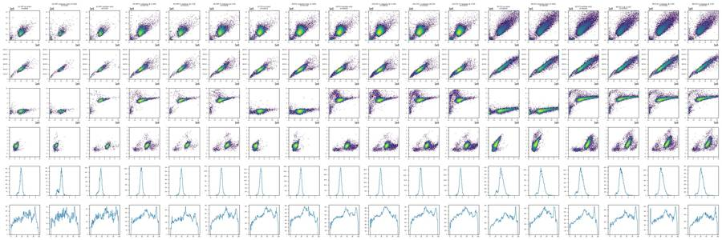
19
agent
Overview plots are done. Next I'm looking at the scatter, viability and caspase channels file by file to choose the gates.
20
tool call · Bash
cat > work/panel.py <<'EOF'
import flowkit as fk, csv, numpy as np, matplotlib, sys
matplotlib.use('Agg')
import matplotlib.pyplot as plt
lay = list(csv.DictReader(open('inputs/plate_layout.csv')))
wells = sys.argv[1].split(',')
out = sys.argv[2]
ash = lambda x, c=150: np.arcsinh(x/c)
rows = [r for r in lay if r['well'] in wells]
fig, axes = plt.subplots(len(rows), 5, figsize=(20, 3.6*len(rows)))
for i, r in enumerate(rows):
s = fk.Sample('inputs/raw/'+r['file'])
df = s.as_dataframe(source='raw'); df.columns = df.columns.get_level_values(0)
kw = dict(bins=200, cmap='jet', norm=matplotlib.colors.LogNorm())
axes[i,0].hist2d(df['FSC-A'], df['SSC-A'], range=[[0,1.05e6],[0,1.05e6]], **kw); axes[i,0].set_title(f"{r['well']} {r['sample']} n={len(df)}")
axes[i,0].set_xlabel('FSC-A'); axes[i,0].set_ylabel('SSC-A')
axes[i,1].hist2d(df['FSC-A'], df['FSC-H'], range=[[0,1.05e6],[0,6e5]], **kw); axes[i,1].set_xlabel('FSC-A'); axes[i,1].set_ylabel('FSC-H')
axes[i,2].hist2d(df['FSC-A'], ash(df['RL3-A']), range=[[0,1.05e6],[-2,10]], **kw); axes[i,2].set_xlabel('FSC-A'); axes[i,2].set_ylabel('asinh RL3-A/150')
axes[i,3].hist2d(ash(df['RL3-A']), ash(df['BL1-A']), range=[[-2,10],[-2,7]], **kw); axes[i,3].set_xlabel('asinh RL3'); axes[i,3].set_ylabel('asinh BL1')
axes[i,4].hist2d(df['FSC-A'], ash(df['BL1-A']), range=[[0,1.05e6],[-2,7]], **kw); axes[i,4].set_xlabel('FSC-A'); axes[i,4].set_ylabel('asinh BL1')
for ax in axes[i]: ax.grid(alpha=0.3)
plt.tight_layout(); plt.savefig(out, dpi=55)
EOF
python3 work/panel.py A1,A2,A3,A4,A5,A6 work/p_wt.png && python3 work/panel.py A7,A8,A9,A10,A11,A12 work/p_e1.png && python3 work/panel.py B1,B2,B3,B4,B5,B6 work/p_e3.png21
tool output
(Bash completed with no output)
22
tool call · Read
{
"file_path": "/task/work/p_wt.png"
}23
tool output
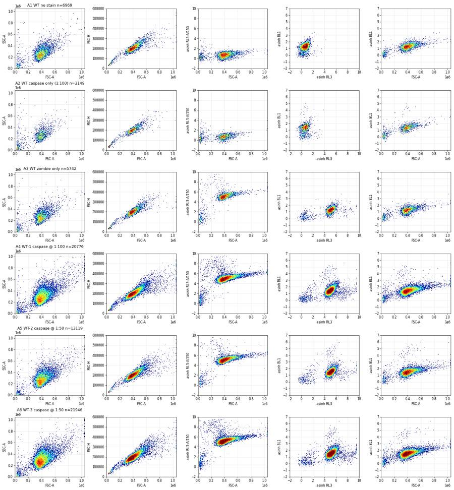
24
tool call · Read
{
"file_path": "/task/work/p_e1.png"
}25
tool output
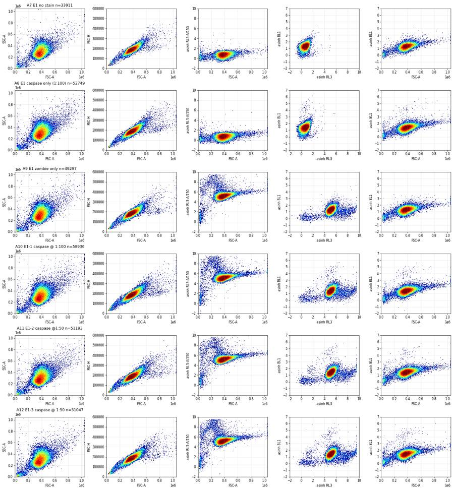
26
tool call · Read
{
"file_path": "/task/work/p_e3.png"
}27
tool output
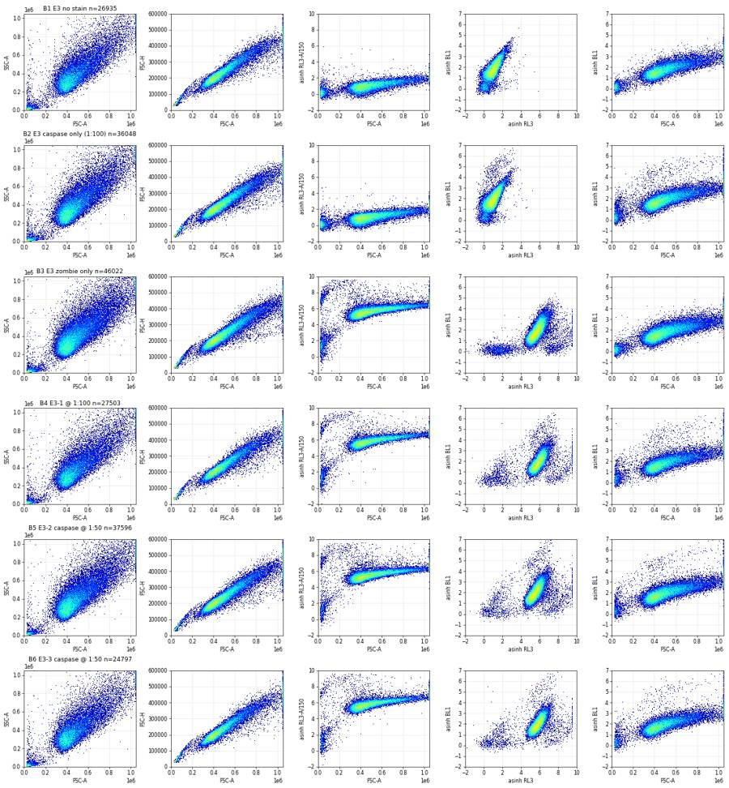
29
tool call · Bash
cat > work/timeqc.py <<'EOF'
import flowkit as fk, csv, numpy as np, matplotlib
matplotlib.use('Agg')
import matplotlib.pyplot as plt
lay = list(csv.DictReader(open('inputs/plate_layout.csv')))
fig, axes = plt.subplots(3, 6, figsize=(24, 10)); axes=axes.flat
for i, r in enumerate(lay):
s = fk.Sample('inputs/raw/'+r['file'])
df = s.as_dataframe(source='raw'); df.columns = df.columns.get_level_values(0)
t = df['Time'].values*0.001 # timestep 0.001 s? Time max ~97900 -> 97.9 s
t = df['Time'].values
bins = np.arange(0, 100, 2)
h, _ = np.histogram(t, bins)
ax = axes[i]
ax.plot(bins[:-1], h/2, 'k-', label='events/s')
ax2 = ax.twinx()
idx = np.digitize(t, bins)
med = [np.median(df['FSC-A'].values[idx==k]) if (idx==k).sum()>5 else np.nan for k in range(1,len(bins))]
medr = [np.median(np.arcsinh(df['BL1-A'].values[idx==k]/150)) if (idx==k).sum()>5 else np.nan for k in range(1,len(bins))]
ax2.plot(bins[:-1], np.array(med)/1e5, 'r-'); ax2.plot(bins[:-1], medr, 'b-')
ax.set_title(f"{r['well']} {r['sample']}")
cv = np.std(h[2:-2])/np.mean(h[2:-2])
print(r['well'], 'rate mean %.0f/s cv %.2f'%(np.mean(h[2:-2])/2, cv), 'first5s', h[:3], 'last', h[-3:])
plt.tight_layout(); plt.savefig('work/time.png', dpi=50)
EOF
python3 work/timeqc.py30
tool output
A1 rate mean 75/s cv 0.20 first5s [72 74 83] last [97 62 25] A2 rate mean 33/s cv 0.18 first5s [41 51 51] last [41 43 19] A3 rate mean 61/s cv 0.20 first5s [46 61 73] last [128 95 66] A4 rate mean 221/s cv 0.19 first5s [143 289 339] last [397 315 156] A5 rate mean 140/s cv 0.19 first5s [103 194 255] last [202 146 47] A6 rate mean 232/s cv 0.18 first5s [196 217 280] last [489 374 313] A7 rate mean 359/s cv 0.21 first5s [262 297 391] last [782 625 429] A8 rate mean 556/s cv 0.20 first5s [638 738 796] last [788 865 471] A9 rate mean 516/s cv 0.18 first5s [468 502 587] last [1330 1068 786] A10 rate mean 622/s cv 0.19 first5s [672 814 800] last [975 864 607] A11 rate mean 543/s cv 0.17 first5s [347 672 621] last [1138 888 442] A12 rate mean 533/s cv 0.16 first5s [477 600 674] last [1158 1148 812] B1 rate mean 286/s cv 0.23 first5s [202 293 294] last [582 470 252] B2 rate mean 382/s cv 0.22 first5s [378 445 463] last [569 532 305] B3 rate mean 488/s cv 0.23 first5s [459 540 636] last [781 715 348] B4 rate mean 290/s cv 0.22 first5s [181 359 324] last [812 548 278] B5 rate mean 393/s cv 0.21 first5s [ 5 777 623] last [1145 862 619] B6 rate mean 262/s cv 0.22 first5s [177 272 292] last [637 517 235]
31
tool call · Read
{
"file_path": "/task/work/time.png"
}32
tool output
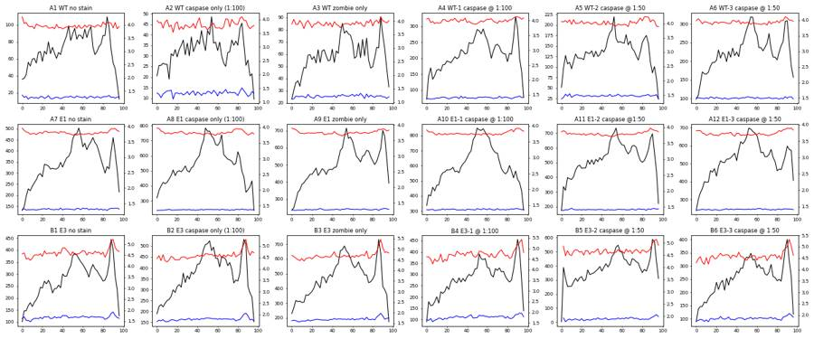
34
tool call · Bash
cat > work/rl3.py <<'EOF'
import flowkit as fk, csv, numpy as np, matplotlib
matplotlib.use('Agg')
import matplotlib.pyplot as plt
lay = {r['well']:r for r in csv.DictReader(open('inputs/plate_layout.csv'))}
ws = ['A3','A5','A9','A11','B3','B5']
fig, axes = plt.subplots(2, 6, figsize=(30, 9))
for j,w in enumerate(ws):
r = lay[w]
s = fk.Sample('inputs/raw/'+r['file'])
df = s.as_dataframe(source='raw'); df.columns = df.columns.get_level_values(0)
sing = (df['FSC-A']>1.2e5)&(df['FSC-A']<1.04e6)
rl = np.arcsinh(df['RL3-A']/150)
ax=axes[0,j]; ax.hist2d(df['FSC-A'], rl, bins=250, range=[[0,1.05e6],[2,10]], cmap='jet', norm=matplotlib.colors.LogNorm()); ax.set_title(w+' '+r['sample'])
ax.grid(alpha=.4)
ax=axes[1,j]; ax.hist(rl[sing], bins=300, range=(-1,10), log=True, histtype='step'); ax.grid(alpha=.4)
ax.hist(rl[~sing], bins=300, range=(-1,10), log=True, histtype='step')
plt.tight_layout(); plt.savefig('work/rl3.png', dpi=45)
EOF
python3 work/rl3.py35
tool output
(Bash completed with no output)
36
tool call · Read
{
"file_path": "/task/work/rl3.png"
}37
tool output
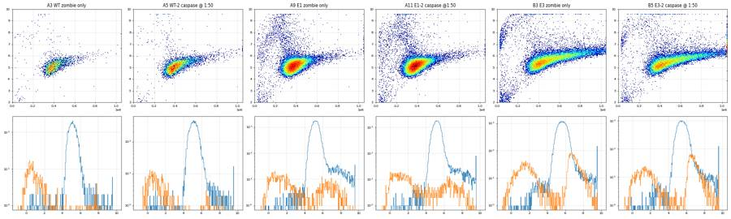
39
agent
Now examining the viability (Zombie NIR) and doublet discrimination distributions to set gate boundaries.
40
tool call · Bash
python3 -c "
import flowkit as fk, csv, numpy as np
lay = list(csv.DictReader(open('inputs/plate_layout.csv')))
for r in lay:
s = fk.Sample('inputs/raw/'+r['file'])
df = s.as_dataframe(source='raw'); df.columns = df.columns.get_level_values(0)
c = (df['FSC-A']>130e3)&(df['FSC-A']<1.04e6)&(df['SSC-A']>30e3)&(df['SSC-A']<1.04e6)
ratio = (df['FSC-H']/df['FSC-A'])[c]
h,e = np.histogram(ratio, bins=np.arange(0.2,0.8,0.025))
print(r['well'], (df['FSC-A']>=1048575).sum(), (df['FSC-A']>1.04e6).sum(), c.sum(), ' '.join('%d'%x for x in h))
print(np.round(np.arange(0.2,0.8,0.025),3))
"41
tool output
A1 9 9 6410 0 1 4 7 17 23 32 94 203 407 852 1215 1420 1139 609 250 63 23 9 10 6 7 5 6 A2 3 3 2585 0 0 1 4 1 5 20 43 67 156 314 513 609 451 218 100 24 15 5 6 9 6 6 4 A3 9 9 5220 1 2 6 8 6 14 32 79 132 371 717 1082 1109 894 483 174 54 15 7 4 3 6 6 4 A4 67 69 19852 2 14 30 42 80 93 193 339 904 1812 3128 4026 4091 2849 1367 511 195 72 35 13 14 6 8 11 A5 18 19 12645 2 6 13 26 44 55 84 215 442 1032 1762 2555 2703 2026 1035 438 123 37 19 5 4 5 3 5 A6 38 41 21145 0 13 19 32 56 92 181 375 963 2012 3377 4348 4196 3071 1498 543 211 66 26 14 12 9 9 9 A7 17 18 32780 1 8 48 40 63 104 255 616 1560 3322 5610 6809 6413 4313 2161 854 308 113 51 27 19 17 17 18 A8 35 38 51425 8 62 145 111 136 194 459 1159 2671 5617 8972 10788 9766 6358 3010 1161 413 158 59 38 22 22 24 21 A9 36 38 47841 10 58 87 82 82 164 472 1097 2755 5759 8436 9808 8716 5586 2698 1187 430 145 62 38 36 23 27 21 A10 59 60 57331 8 73 132 137 146 208 594 1367 3226 6430 9998 11681 10580 6900 3508 1329 518 184 88 41 37 28 33 33 A11 38 40 49477 10 53 93 95 105 185 477 1181 2763 5577 8679 10054 9089 6006 2959 1243 459 152 74 50 37 28 27 26 A12 30 30 49025 4 49 88 95 82 175 438 1117 2724 5522 8190 9911 8841 6038 3248 1400 540 214 73 49 40 33 36 40 B1 786 817 23596 2 10 22 36 81 145 307 753 1616 3164 4580 5228 4029 2060 894 272 115 56 38 36 23 27 27 21 B2 1054 1094 31963 2 15 47 62 114 190 390 907 2139 4171 6482 6985 5452 2931 1212 397 127 59 45 38 26 36 27 25 B3 1692 1769 40949 1 23 66 113 140 281 559 1206 2696 5355 8033 9117 7133 3769 1393 474 162 75 48 32 35 36 31 29 B4 940 964 24392 2 12 27 52 97 151 304 717 1420 3009 4815 5566 4401 2317 860 285 116 46 28 21 21 16 16 24 B5 1355 1400 34114 2 19 63 83 112 209 460 920 2168 4362 6876 7749 5933 3098 1235 374 150 68 42 27 20 26 27 27 B6 676 701 22364 4 6 21 43 68 125 307 588 1441 2901 4563 5190 3870 1997 689 259 90 39 30 21 20 10 16 18 [0.2 0.225 0.25 0.275 0.3 0.325 0.35 0.375 0.4 0.425 0.45 0.475 0.5 0.525 0.55 0.575 0.6 0.625 0.65 0.675 0.7 0.725 0.75 0.775 0.8 ]
43
tool call · Bash
cat > work/proto.py <<'EOF'
import flowkit as fk, csv, numpy as np, pandas as pd
lay = list(csv.DictReader(open('inputs/plate_layout.csv')))
ash = lambda x: np.arcsinh(x/150)
rows=[]
for r in lay:
s = fk.Sample('inputs/raw/'+r['file'])
df = s.as_dataframe(source='raw'); df.columns = df.columns.get_level_values(0)
fa, ss, fh = df['FSC-A'], df['SSC-A'], df['FSC-H']
cells = (fa>130e3)&(fa<1.04e6)&(ss>30e3)&(ss<1.04e6)
ratio = fh/fa
sing = cells & (ratio>0.36)&(ratio<0.75)
rl = ash(df['RL3-A']); bl = ash(df['BL1-A'])
bound = 6.2 + 0.8*(fa-130e3)/(1.04e6-130e3)
live = sing & (rl < bound)
dead = sing & ~(rl<bound)
d = dict(well=r['well'], sample=r['sample'], n=len(df), cells=cells.sum(), sing=sing.sum(), live=live.sum(), pct_dead=100*dead.sum()/sing.sum())
for t in [2.5,3.0,3.5,4.0]:
d[f'bl>{t}'] = 100*(live & (bl>t)).sum()/live.sum()
# diagonal: bl > base + slope*FSC
rows.append(d)
pd.set_option('display.width',250)
print(pd.DataFrame(rows).round(2))
EOF
python3 work/proto.py44
tool output
well sample n cells ... bl>2.5 bl>3.0 bl>3.5 bl>4.0 0 A1 WT no stain 6969 6410 ... 0.32 0.06 0.00 0.00 1 A2 WT caspase only (1:100) 3149 2585 ... 1.45 0.98 0.71 0.51 2 A3 WT zombie only 5742 5220 ... 0.22 0.00 0.00 0.00 3 A4 WT-1 caspase @ 1:100 20776 19852 ... 1.26 0.59 0.42 0.28 4 A5 WT-2 caspase @ 1:50 13119 12645 ... 1.46 0.72 0.59 0.47 5 A6 WT-3 caspase @ 1:50 21946 21145 ... 1.60 0.74 0.60 0.48 6 A7 E1 no stain 33911 32780 ... 0.30 0.04 0.01 0.00 7 A8 E1 caspase only (1:100) 52749 51425 ... 0.55 0.22 0.16 0.12 8 A9 E1 zombie only 49297 47841 ... 0.30 0.05 0.01 0.00 9 A10 E1-1 caspase @ 1:100 58936 57331 ... 0.56 0.22 0.16 0.12 10 A11 E1-2 caspase @1:50 51193 49477 ... 0.59 0.24 0.19 0.15 11 A12 E1-3 caspase @ 1:50 51047 49025 ... 0.77 0.37 0.29 0.21 12 B1 E3 no stain 26935 23596 ... 11.86 2.59 0.34 0.04 13 B2 E3 caspase only (1:100) 36048 31963 ... 16.19 4.62 1.58 0.88 14 B3 E3 zombie only 46022 40949 ... 12.08 2.66 0.38 0.05 15 B4 E3-1 @ 1:100 27503 24392 ... 14.29 4.08 1.53 0.86 16 B5 E3-2 caspase @ 1:50 37596 34114 ... 17.17 4.61 1.26 0.67 17 B6 E3-3 caspase @ 1:50 24797 22364 ... 16.08 4.19 1.22 0.68 [18 rows x 11 columns]
46
tool call · Bash
sed -i 's/print(pd.DataFrame(rows).round(2))/print(pd.DataFrame(rows).drop(columns="sample").round(2).to_string())/' work/proto.py && python3 work/proto.py
cat > work/blplot.py <<'EOF'
import flowkit as fk, csv, numpy as np, matplotlib
matplotlib.use('Agg')
import matplotlib.pyplot as plt
lay = list(csv.DictReader(open('inputs/plate_layout.csv')))
ash = lambda x: np.arcsinh(x/150)
fig, axes = plt.subplots(3, 6, figsize=(30, 14))
for i, r in enumerate(lay):
s = fk.Sample('inputs/raw/'+r['file'])
df = s.as_dataframe(source='raw'); df.columns = df.columns.get_level_values(0)
fa, ss, fh = df['FSC-A'], df['SSC-A'], df['FSC-H']
cells = (fa>130e3)&(fa<1.04e6)&(ss>30e3)&(ss<1.04e6)
ratio = fh/fa
sing = cells & (ratio>0.36)&(ratio<0.75)
rl = ash(df['RL3-A']); bl = ash(df['BL1-A'])
bound = 6.2 + 0.8*(fa-130e3)/(1.04e6-130e3)
live = sing & (rl < bound)
ax = axes.flat[i]
ax.hist2d(fa[live], bl[live], bins=200, range=[[0,1.05e6],[-1,7]], cmap='jet', norm=matplotlib.colors.LogNorm())
ax.set_title(f"{r['well']} {r['sample']} live={live.sum()}"); ax.grid(alpha=.4)
plt.tight_layout(); plt.savefig('work/bl_fsc.png', dpi=45)
EOF
python3 work/blplot.py47
tool output
well n cells sing live pct_dead bl>2.5 bl>3.0 bl>3.5 bl>4.0 0 A1 6969 6410 6328 6328 0.00 0.32 0.06 0.00 0.00 1 A2 3149 2585 2550 2550 0.00 1.45 0.98 0.71 0.51 2 A3 5742 5220 5151 5061 1.75 0.22 0.00 0.00 0.00 3 A4 20776 19852 19494 19113 1.95 1.26 0.59 0.42 0.28 4 A5 13119 12645 12457 12295 1.30 1.46 0.72 0.59 0.47 5 A6 21946 21145 20844 20329 2.47 1.60 0.74 0.60 0.48 6 A7 33911 32780 32368 32368 0.00 0.30 0.04 0.01 0.00 7 A8 52749 51425 50520 50520 0.00 0.55 0.22 0.16 0.12 8 A9 49297 47841 47124 45629 3.17 0.30 0.05 0.01 0.00 9 A10 58936 57331 56346 54548 3.19 0.56 0.22 0.16 0.12 10 A11 51193 49477 48688 47216 3.02 0.59 0.24 0.19 0.15 11 A12 51047 49025 48233 46337 3.93 0.77 0.37 0.29 0.21 12 B1 26935 23596 23105 23105 0.00 11.86 2.59 0.34 0.04 13 B2 36048 31963 31290 31290 0.00 16.19 4.62 1.58 0.88 14 B3 46022 40949 39932 38730 3.01 12.08 2.66 0.38 0.05 15 B4 27503 24392 23857 22855 4.20 14.29 4.08 1.53 0.86 16 B5 37596 34114 33350 32313 3.11 17.17 4.61 1.26 0.67 17 B6 24797 22364 21923 21028 4.08 16.08 4.19 1.22 0.68
48
tool call · Read
{
"file_path": "/task/work/bl_fsc.png"
}49
tool output
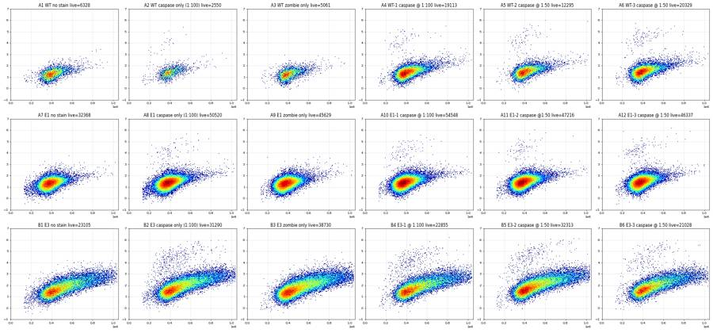
51
thinking
Caspase-3+ cells form a small, bright population at low FSC, but since the E3 cells are large and autofluorescent, the caspase gate needs a size-dependent diagonal. I'm checking where those caspase-positive cells sit relative to the live/dead boundary next.
52
tool call · Bash
cat > work/blrl.py <<'EOF'
import flowkit as fk, csv, numpy as np, matplotlib
matplotlib.use('Agg')
import matplotlib.pyplot as plt
lay = list(csv.DictReader(open('inputs/plate_layout.csv')))
ash = lambda x: np.arcsinh(x/150)
fig, axes = plt.subplots(2, 6, figsize=(30, 10))
ws = ['A3','A6','A9','A12','B3','B5','A1','A2','A7','A8','B1','B2']
lay = {r['well']:r for r in lay}
def blbound(fa):
return np.interp(fa, [130e3, 450e3, 1.04e6], [2.8, 3.0, 4.4])
for i, w in enumerate(ws):
r = lay[w]
s = fk.Sample('inputs/raw/'+r['file'])
df = s.as_dataframe(source='raw'); df.columns = df.columns.get_level_values(0)
fa, ss, fh = df['FSC-A'], df['SSC-A'], df['FSC-H']
cells = (fa>130e3)&(fa<1.04e6)&(ss>30e3)&(ss<1.04e6)
ratio = fh/fa
sing = cells & (ratio>0.36)&(ratio<0.75)
rl = ash(df['RL3-A']); bl = ash(df['BL1-A'])
bound = 6.2 + 0.8*(fa-130e3)/(1.04e6-130e3)
live = sing & (rl < bound)
pos = bl > blbound(fa)
ax = axes.flat[i]
ax.hist2d(rl[sing], bl[sing], bins=200, range=[[-1,10],[-1,7]], cmap='jet', norm=matplotlib.colors.LogNorm())
ax.set_title(f"{w} {r['sample']} pos_live={100*(pos&live).sum()/live.sum():.2f}% pos_dead={(pos&sing&~live).sum()}/{(sing&~live).sum()}"); ax.grid(alpha=.4)
plt.tight_layout(); plt.savefig('work/bl_rl.png', dpi=45)
EOF
python3 work/blrl.py53
tool output
(Bash completed with no output)
54
tool call · Read
{
"file_path": "/task/work/bl_rl.png"
}55
tool output
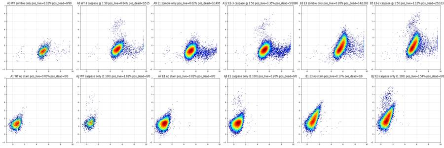
57
tool call · Bash
cat > work/blgate.py <<'EOF'
import flowkit as fk, csv, numpy as np, matplotlib, sys
matplotlib.use('Agg')
import matplotlib.pyplot as plt
lay = {r['well']:r for r in csv.DictReader(open('inputs/plate_layout.csv'))}
ash = lambda x: np.arcsinh(x/150)
X = [130e3, 400e3, 600e3, 1.04e6]; Y = [3.0, 3.0, 3.6, 4.6]
def blbound(fa): return np.interp(fa, X, Y)
ws = ['B1','B3','B2','B4','B5','B6','A3','A9','A4','A5','A10','A11']
fig, axes = plt.subplots(2, 6, figsize=(30, 10))
for i, w in enumerate(ws):
r = lay[w]
df = fk.Sample('inputs/raw/'+r['file']).as_dataframe(source='raw'); df.columns = df.columns.get_level_values(0)
fa, ss, fh = df['FSC-A'], df['SSC-A'], df['FSC-H']
sing = (fa>130e3)&(fa<1.04e6)&(ss>30e3)&(ss<1.04e6)&(fh/fa>0.36)&(fh/fa<0.75)
rl = ash(df['RL3-A']); bl = ash(df['BL1-A'])
live = sing & (rl < 6.2 + 0.8*(fa-130e3)/(1.04e6-130e3))
pos = live & (bl > blbound(fa))
ax = axes.flat[i]
ax.hist2d(fa[live], bl[live], bins=200, range=[[0,1.05e6],[-1,7]], cmap='jet', norm=matplotlib.colors.LogNorm())
ax.plot(X, Y, 'k-', lw=2)
ax.set_title(f"{w} {r['sample']} pos={100*pos.sum()/live.sum():.2f}% ({pos.sum()})"); ax.grid(alpha=.4)
plt.tight_layout(); plt.savefig('work/bl_gate.png', dpi=45)
EOF
python3 work/blgate.py58
tool output
(Bash completed with no output)
59
tool call · Read
{
"file_path": "/task/work/bl_gate.png"
}60
tool output
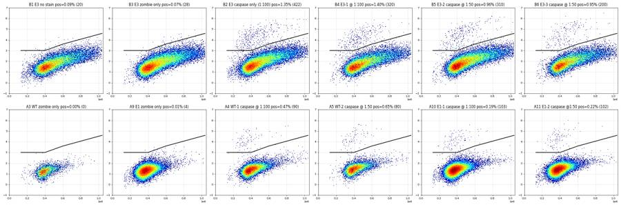
62
agent
The diagonal caspase gate works: FMO false positives are 0.00% (WT), 0.01% (E1) and 0.07% (E3), against 0.2–1.4% in stained wells. Next I'm building the FlowKit strategy.
63
tool call · Bash
python3 -c " import flowkit as fk, inspect print(fk.__version__) print(inspect.signature(fk.transforms.AsinhTransform.__init__)) print(inspect.signature(fk.GatingStrategy.add_transform)) print(inspect.signature(fk.GatingStrategy.add_gate)) print(inspect.signature(fk.gates.PolygonGate.__init__)) print(inspect.signature(fk.gates.RectangleGate.__init__)) print(inspect.signature(fk.Dimension.__init__)) "
64
tool output
1.2.3 (self, param_t, param_m, param_a) (self, transform_id, transform) (self, gate, gate_path, sample_id=None) (self, gate_name, dimensions, vertices, use_complement=False) (self, gate_name, dimensions, use_complement=False) (self, dimension_id, compensation_ref='uncompensated', transformation_ref=None, range_min=None, range_max=None)
66
tool call · Bash
mkdir -p /task/outputs && cd /task && cat > work/build_gates.py <<'EOF'
import flowkit as fk, numpy as np
T = 1048576.0
COF = 150.0
M = float(np.arcsinh(T/COF)/np.log(10))
xf = fk.transforms.AsinhTransform(param_t=T, param_m=M, param_a=0.0)
def A(v): # asinh(x/150) units -> transformed units
return float(v/(M*np.log(10)))
g = fk.GatingStrategy()
g.add_transform('asinh150', xf)
UC = 'uncompensated'
fsc_a = lambda: fk.Dimension('FSC-A', compensation_ref=UC)
# 1. cells: exclude debris (FSC-A <130k, SSC-A <30k) and events at the FSC-A/SSC-A ceiling (1,048,575)
cells = fk.gates.PolygonGate('cells', [fsc_a(), fk.Dimension('SSC-A', compensation_ref=UC)],
[(130e3, 30e3), (1.04e6, 30e3), (1.04e6, 1.04e6), (130e3, 1.04e6)])
g.add_gate(cells, gate_path=('root',))
# 2. singlets: FSC-H/FSC-A between 0.36 and 0.75
x0, x1 = 100e3, 1.1e6
sing = fk.gates.PolygonGate('singlets', [fsc_a(), fk.Dimension('FSC-H', compensation_ref=UC)],
[(x0, 0.36*x0), (x1, 0.36*x1), (x1, 0.75*x1), (x0, 0.75*x0)])
g.add_gate(sing, gate_path=('root', 'cells'))
# 3. live / dead: Zombie NIR (RL3-A) boundary rising with cell size: asinh(RL3/150) = 6.2 at FSC-A 130k -> 7.0 at 1.04M
def rl_bound(fa): return 6.2 + 0.8*(fa-130e3)/(1.04e6-130e3)
rl_dim = lambda: fk.Dimension('RL3-A', compensation_ref=UC, transformation_ref='asinh150')
lo, hi = A(np.arcsinh(-20000/COF)), A(np.arcsinh(2e6/COF))
live = fk.gates.PolygonGate('live', [fsc_a(), rl_dim()],
[(x0, lo), (x1, lo), (x1, A(rl_bound(x1))), (x0, A(rl_bound(x0)))])
g.add_gate(live, gate_path=('root', 'cells', 'singlets'))
dead = fk.gates.PolygonGate('dead', [fsc_a(), rl_dim()],
[(x0, A(rl_bound(x0))), (x1, A(rl_bound(x1))), (x1, hi), (x0, hi)])
g.add_gate(dead, gate_path=('root', 'cells', 'singlets'))
# 4. cleaved caspase-3 AF488 (BL1-A) positive: diagonal gate above size-dependent autofluorescence
bx = [x0, 400e3, 600e3, 1.04e6]; by = [3.0, 3.0, 3.6, 4.6]
by_x1 = 4.6 + (4.6-3.6)/(1.04e6-600e3)*(x1-1.04e6)
bl_dim = fk.Dimension('BL1-A', compensation_ref=UC, transformation_ref='asinh150')
casp = fk.gates.PolygonGate('casp3_pos', [fsc_a(), bl_dim],
[(bx[0], A(by[0])), (bx[1], A(by[1])), (bx[2], A(by[2])), (bx[3], A(by[3])), (x1, A(by_x1)), (x1, hi), (x0, hi)])
g.add_gate(casp, gate_path=('root', 'cells', 'singlets', 'live'))
with open('/task/outputs/gates.xml', 'wb') as fh:
fk.export_gatingml(g, fh)
g2 = fk.parse_gating_xml('/task/outputs/gates.xml')
print(g2.get_gate_ids())
EOF
python3 work/build_gates.py67
tool output
[('cells', ('root',)), ('singlets', ('root', 'cells')), ('live', ('root', 'cells', 'singlets')), ('casp3_pos', ('root', 'cells', 'singlets', 'live')), ('dead', ('root', 'cells', 'singlets'))]69
tool call · Bash
cat > work/counts.py <<'EOF'
import flowkit as fk, csv, numpy as np, pandas as pd
lay = list(csv.DictReader(open('inputs/plate_layout.csv')))
g = fk.parse_gating_xml('/task/outputs/gates.xml')
pops = [('cells','cells','all_events'), ('singlets','singlets','cells'), ('live','live','singlets'),
('casp3_pos','marker_positive','live'), ('dead','other','singlets')]
rows = []
for r in lay:
s = fk.Sample('inputs/raw/'+r['file'])
res = g.gate_sample(s)
n_all = s.event_count
cnt = {'all_events': n_all}
rows.append(dict(file=r['file'], well=r['well'], population='all_events', role='other', parent='none', count=n_all, pct_of_parent=''))
for name, role, parent in pops:
c = int(res.get_gate_count(name))
cnt[name] = c
pc = cnt[parent]
rows.append(dict(file=r['file'], well=r['well'], population=name, role=role, parent=parent, count=c,
pct_of_parent=('' if pc == 0 else round(100.0*c/pc, 4))))
df = pd.DataFrame(rows, columns=['file','well','population','role','parent','count','pct_of_parent'])
df.to_csv('/task/outputs/counts.csv', index=False)
w = df.pivot(index='well', columns='population', values='count')
w = w.loc[[r['well'] for r in lay]]
w['pct_casp3_of_live'] = 100*w['casp3_pos']/w['live']
w['pct_dead_of_singlets'] = 100*w['dead']/w['singlets']
print(w.round(3).to_string())
EOF
python3 work/counts.py70
tool output
population all_events casp3_pos cells dead live singlets pct_casp3_of_live pct_dead_of_singlets well A1 6969 0 6410 0 6328 6328 0.000 0.000 A2 3149 24 2585 0 2550 2550 0.941 0.000 A3 5742 0 5220 90 5061 5151 0.000 1.747 A4 20776 90 19852 381 19113 19494 0.471 1.954 A5 13119 80 12645 162 12295 12457 0.651 1.300 A6 21946 126 21145 515 20329 20844 0.620 2.471 A7 33911 4 32780 0 32368 32368 0.012 0.000 A8 52749 94 51425 0 50520 50520 0.186 0.000 A9 49297 4 47841 1495 45629 47124 0.009 3.172 A10 58936 103 57331 1798 54548 56346 0.189 3.191 A11 51193 102 49477 1472 47216 48688 0.216 3.023 A12 51047 153 49025 1896 46337 48233 0.330 3.931 B1 26935 20 23596 0 23105 23105 0.087 0.000 B2 36048 422 31963 0 31290 31290 1.349 0.000 B3 46022 28 40949 1202 38730 39932 0.072 3.010 B4 27503 320 24392 1002 22855 23857 1.400 4.200 B5 37596 310 34114 1037 32313 33350 0.959 3.109 B6 24797 200 22364 895 21028 21923 0.951 4.082
72
agent
FlowKit counts reproduce the prototype. Now checking staining intensity by antibody dilution (1:100 vs 1:50).
73
tool call · Bash
cat > work/mfi.py <<'EOF'
import flowkit as fk, csv, numpy as np, pandas as pd
lay = list(csv.DictReader(open('inputs/plate_layout.csv')))
g = fk.parse_gating_xml('/task/outputs/gates.xml')
rows=[]
for r in lay:
s = fk.Sample('inputs/raw/'+r['file'])
res = g.gate_sample(s)
df = s.as_dataframe(source='raw'); df.columns = df.columns.get_level_values(0)
live = res.get_gate_membership('live'); pos = res.get_gate_membership('casp3_pos')
neg = live & ~pos
bl = df['BL1-A'].values; fa = df['FSC-A'].values
small = (fa>200e3)&(fa<450e3)
negs = bl[neg & small]
rsd = (np.percentile(negs,84.13)-np.percentile(negs,15.87))/2
rows.append(dict(well=r['well'], sample=r['sample'], n_pos=pos.sum(), med_pos=np.median(bl[pos]) if pos.sum() else np.nan,
med_neg=np.median(negs), rSD_neg=rsd, SI=(np.median(bl[pos])-np.median(negs))/(2*rsd) if pos.sum() else np.nan,
fold=np.median(bl[pos])/np.median(negs) if pos.sum() else np.nan,
med_fsc_pos=np.median(fa[pos]) if pos.sum() else np.nan, med_fsc_neg=np.median(fa[neg]),
med_rl3_live=np.median(df['RL3-A'].values[live]), med_rl3_pos=np.median(df['RL3-A'].values[pos]) if pos.sum() else np.nan))
d = pd.DataFrame(rows); pd.set_option('display.width',250)
print(d.round(1).to_string())
d.to_csv('work/mfi.csv', index=False)
EOF
python3 work/mfi.py74
tool output
well sample n_pos med_pos med_neg rSD_neg SI fold med_fsc_pos med_fsc_neg med_rl3_live med_rl3_pos 0 A1 WT no stain 0 NaN 231.0 83.0 NaN NaN NaN 402555.5 115.0 NaN 1 A2 WT caspase only (1:100) 24 4361.0 267.0 88.5 23.1 16.3 378494.5 397315.0 119.0 105.5 2 A3 WT zombie only 0 NaN 223.0 83.0 NaN NaN NaN 397876.0 12469.0 NaN 3 A4 WT-1 caspase @ 1:100 90 5177.5 260.0 93.0 26.4 19.9 360214.0 403215.0 11184.0 8986.5 4 A5 WT-2 caspase @ 1:50 80 5939.5 280.0 96.0 29.5 21.2 398705.5 405533.0 12463.0 10662.5 5 A6 WT-3 caspase @ 1:50 126 6629.0 292.0 100.0 31.7 22.7 389877.5 396833.0 13520.0 13417.5 6 A7 E1 no stain 4 2515.0 250.0 91.5 12.4 10.1 448961.0 381561.5 121.0 533.0 7 A8 E1 caspase only (1:100) 94 4893.5 261.0 95.0 24.4 18.7 387755.0 384304.5 117.0 141.0 8 A9 E1 zombie only 4 2180.5 246.0 90.5 10.7 8.9 418601.5 378561.0 13052.0 14439.5 9 A10 E1-1 caspase @ 1:100 103 4744.0 266.0 95.5 23.4 17.8 386379.0 379614.0 12656.0 11412.0 10 A11 E1-2 caspase @1:50 102 5020.5 280.0 99.0 23.9 17.9 368479.0 383408.0 13362.0 10962.5 11 A12 E1-3 caspase @ 1:50 153 4937.0 279.0 101.0 23.1 17.7 358338.0 378210.0 13092.0 9862.0 12 B1 E3 no stain 20 2885.5 279.0 116.0 11.2 10.3 515016.5 469340.0 181.0 571.5 13 B2 E3 caspase only (1:100) 422 5556.0 308.0 130.5 20.1 18.0 438957.5 464503.0 176.0 186.0 14 B3 E3 zombie only 28 3721.0 270.0 115.0 15.0 13.8 629436.5 471345.0 20675.0 30304.0 15 B4 E3-1 @ 1:100 320 4827.5 286.0 120.0 18.9 16.9 448297.0 476339.0 25135.0 21454.0 16 B5 E3-2 caspase @ 1:50 310 6292.0 327.0 132.5 22.5 19.2 446375.0 466679.0 17763.0 15597.0 17 B6 E3-3 caspase @ 1:50 200 5921.5 327.0 131.5 21.3 18.1 462554.5 463108.0 23843.0 21260.5
76
thinking
1:50 only makes the positives 0–30% brighter (stain index 21–32 versus 19–26 at 1:100) and leaves the % positive unchanged. I'm loading the charting guidance before drawing the main figure.
77
tool call · Skill
{
"skill": "dataviz"
}78
tool output
Launching skill: dataviz
79
tool call · Bash
cd /tmp/claude-0/bundled-skills/2.1.322/5022cc706645946432926ffd6f822016/dataviz && sed -n 1,200p references/palette.md | head -120; ls scripts
80
tool output
# Reference palette
This is the **reference instance** of the data-viz method: every parameter the
method needs, filled in with a validated default palette. The rest of the skill
is system-agnostic - **to target your brand, substitute this file's values** and
re-run the validator. Nothing else changes.
## How to use these values
Everything below is plain hex. In an HTML chart, **define the slots you use as
CSS custom properties in a local `<style>` block** at the top of the file, then
reference them by role throughout - so the light/dark values swap in one place,
and the chart body is written against roles rather than raw hex:
```css
.viz-root {
color-scheme: light;
--surface-1: #fcfcfb; /* chart surface */
--text-primary: #0b0b0b;
--text-secondary: #52514e;
--series-1: #2a78d6; /* categorical slot 1 */
/* ...only the roles this chart uses */
}
@media (prefers-color-scheme: dark) {
:root:where(:not([data-theme="light"])) .viz-root {
color-scheme: dark;
--surface-1: #1a1a19;
--text-primary: #f0efec;
--text-secondary: #c3c2b7;
--series-1: #3987e5;
}
}
:root[data-theme="dark"] .viz-root {
color-scheme: dark;
--surface-1: #1a1a19;
--text-primary: #f0efec;
--text-secondary: #c3c2b7;
--series-1: #3987e5;
}
```
Declare the dark values under both scopes as above - the media query covers
the OS setting; the `data-theme` scope covers the viewer's theme toggle,
which must win both ways (the `:not(...)` guard lets a light stamp beat
OS-dark; `:where()` keeps the media block below the toggle scope).
## Categorical palette
Both modes are selected. The dark column is the same eight hues stepped for the
dark surface, not a separate palette:
| Slot | Hue | Light | Dark |
|------|-----|-------|------|
| 1 | blue | `#2a78d6` | `#3987e5` |
| 2 | orange | `#eb6834` | `#d95926` |
| 3 | aqua | `#1baf7a` | `#199e70` |
| 4 | yellow | `#eda100` | `#c98500` |
| 5 | magenta | `#e87ba4` | `#d55181` |
| 6 | green | `#008300` | `#008300` |
| 7 | violet | `#6250d6` | `#9085e9` |
| 8 | red | `#e34948` | `#e66767` |
This order passes every hard gate in both modes on the default *adjacent*
pairlist (stacks, bars, lines): worst adjacent CVD Delta E 9.1 light / 8.4 dark
(OKLab ×100, >=8 target), worst adjacent normal-vision Delta E 19.6 light / 19.3
dark (>=15 floor). Under `--pairs all` (scatter, bubble, choropleth, small
multiples) the full eight cannot clear the floors - with all 28 pairs in
play no ordering can (the pairlist no longer depends on order), and
re-stepping is off the table by the documented-palette rule - so those
chart forms carry a series cap: **the first three slots validate all-pairs
in both modes** (worst pair CVD Delta E 9.2 light / 9.4 dark, normal-vision 24.0
light / 20.9 dark - clear of the CVD warn band). Past three, fold to "Other" or
facet: the fourth slot puts yellow and orange on screen
together, and that pair fails the all-pairs floors (normal-vision 13.7
light; CVD 4.8 dark). Three light-mode slots (magenta, yellow, aqua)
sit below 3:1 contrast on the light surface: the **relief rule** applies (ship
visible direct labels or the table view). The dark steps were chosen for the
dark band (OKLCH L ~ 0.48-0.67, >= 3:1 on the dark surface) and validated as a
set. (Ordering history: adopted July 2026 for its more harmonious opening -
the same eight hues and steps as its predecessor, re-ordered, zero hex
changes. The predecessor validated its first FOUR slots all-pairs, with its
dark run in the 6-8 CVD warn band, so secondary encoding was required there;
this order deliberately trades that fourth slot - yellow now sits beside orange -
for better-looking leading colors. Revisit the trade if yellow<->orange
confusion shows up in real charts with four or more series; undoing it is a
pure re-order. Light slot 7 has since been lightened, `#4a3aa7` -> `#6250d6`
(August 2026); the adjacent-pair figures above are unchanged by that move, the
non-adjacent blue<->violet pair now sits below both floors under `--pairs all`
(normal-vision 10.5, CVD 4.5 - inside the range the series cap already
excludes), and the order enumeration was run with the earlier value.) When you
swap in your own ramps, hold your palette to the full gate.
The slot **ordering** is the CVD-safety mechanism, not cosmetic - candidate
orderings were enumerated and only those clearing every adjacent gate in both
modes kept (see `color-formula.md` § Themes); this default is one of the
passing orders, picked among them for its opening colors. When you swap in
your brand's hues, do the same: run the validator on candidate orderings and
choose only among the passing ones.
## Sequential hue
Default single hue: **blue**, light->dark. When two sequential contexts appear at
once, the second takes the next categorical slot's hue (orange), each as its own
one-hue ramp.
| step | hex | step | hex | step | hex | step | hex |
|---|---|---|---|---|---|---|---|
| 100 | `#cde2fb` | 250 | `#86b6ef` | 400 | `#3987e5` | 550 | `#1c5cab` |
| 150 | `#b7d3f6` | 300 | `#6da7ec` | 450 | `#2a78d6` | 600 | `#184f95` |
| 200 | `#9ec5f4` | 350 | `#5598e7` | 500 | `#256abf` | 650 | `#104281` |
| | | | | | | 700 | `#0d366b` |
The full 100->700 range is for **sequential** encoding (continuous magnitude -
heatmaps, choropleths) where the lightest step means "near zero" and is allowed
to recede toward the surface. For an **ordinal** ramp (discrete ordered marks -
funnel stages, tiers - validated with `--ordinal`), the step nearest the surface
must still clear 2:1: on light, start no lighter than **step 250** (`#86b6ef`,
2.06:1); on dark, go no darker than **step 600** (`#184f95`, 2.15:1).
## Diverging pair
validate_palette.js
validate_palette.py
Shell cwd was reset to /task82
agent
Now writing condition_summary.csv and the figure (dot plot of % caspase-3+ per well plus representative gate plots).
83
tool call · Bash
cat > work/summary_fig.py <<'EOF'
import flowkit as fk, csv, numpy as np, pandas as pd, matplotlib
matplotlib.use('Agg')
import matplotlib.pyplot as plt
from matplotlib.lines import Line2D
lay = pd.read_csv('inputs/plate_layout.csv')
c = pd.read_csv('/task/outputs/counts.csv')
w = c.pivot(index='well', columns='population', values='count')
w['pct'] = 100*w['casp3_pos']/w['live']
cond_def = [ # condition, wells
('WT_unstained', ['A1']), ('WT_casp_only_1to100_noZombie', ['A2']), ('WT_Zombie_only_FMO', ['A3']),
('WT_casp_1to100', ['A4']), ('WT_casp_1to50', ['A5','A6']),
('E1_unstained', ['A7']), ('E1_casp_only_1to100_noZombie', ['A8']), ('E1_Zombie_only_FMO', ['A9']),
('E1_casp_1to100', ['A10']), ('E1_casp_1to50', ['A11','A12']),
('E3_unstained', ['B1']), ('E3_casp_only_1to100_noZombie', ['B2']), ('E3_Zombie_only_FMO', ['B3']),
('E3_casp_1to100', ['B4']), ('E3_casp_1to50', ['B5','B6']),
]
excluded = [] # no wells excluded
rows = []
for name, ws in cond_def:
ws = [x for x in ws if x not in excluded]
v = w.loc[ws, 'pct'].values
rows.append(dict(condition=name, wells=';'.join(ws), n_wells_used=len(ws), mean=round(float(np.mean(v)), 4),
sd=(round(float(np.std(v, ddof=1)), 4) if len(v) > 1 else ''),
metric_definition='casp3_pos / live (% of live singlet cells; cleaved caspase-3 AF488 [BL1-A] positive among Zombie NIR [RL3-A]-low singlets)',
normalisation_applied='none'))
cs = pd.DataFrame(rows, columns=['condition','wells','n_wells_used','mean','sd','metric_definition','normalisation_applied'])
cs.to_csv('/task/outputs/condition_summary.csv', index=False)
print(cs[['condition','wells','n_wells_used','mean','sd']].to_string())
# ---------------- figure ----------------
COL = {'WT': '#2a78d6', 'E1': '#eb6834', 'E3': '#1baf7a'}
TXT, TXT2, GRID = '#0b0b0b', '#52514e', '#e4e3df'
plt.rcParams.update({'font.size': 10, 'axes.edgecolor': TXT2, 'axes.labelcolor': TXT, 'xtick.color': TXT2, 'ytick.color': TXT2})
fig = plt.figure(figsize=(15, 9.6), facecolor='#fcfcfb')
gsp = fig.add_gridspec(2, 6, height_ratios=[1.15, 1], hspace=0.55, wspace=0.35)
ax = fig.add_subplot(gsp[0, :])
ax.set_facecolor('#fcfcfb')
cats = [('unstained', 'Unstained'), ('Zombie_only_FMO', 'Zombie NIR only\n(caspase FMO)'), ('casp_only_1to100_noZombie', 'Caspase 1:100 only\n(no Zombie)'),
('casp_1to100', 'Zombie + caspase\n1:100'), ('casp_1to50', 'Zombie + caspase\n1:50')]
lines = ['WT', 'E1', 'E3']
off = {'WT': -0.25, 'E1': 0.0, 'E3': 0.25}
for i, (key, lab) in enumerate(cats):
for ln in lines:
cname = f'{ln}_{key}'
ws = dict(cond_def)[cname]
v = w.loc[ws, 'pct'].values
x = i + off[ln]
jit = np.linspace(-0.05, 0.05, len(v)) if len(v) > 1 else [0]
ax.scatter(x + np.array(jit), v, s=60, color=COL[ln], edgecolor='#fcfcfb', linewidth=1.5, zorder=3)
if len(v) > 1:
ax.hlines(v.mean(), x-0.1, x+0.1, color=TXT, lw=2, zorder=4)
for xx, vv, ww in zip(x + np.array(jit), v, ws):
ax.annotate(f'{ww}\n{vv:.2f}%', (xx, vv), xytext=(0, 9), textcoords='offset points', ha='center', fontsize=7.5, color=TXT2)
ax.set_xticks(range(len(cats))); ax.set_xticklabels([l for _, l in cats], fontsize=9.5, color=TXT)
ax.set_ylabel('Cleaved caspase-3+ (% of live singlets)')
ax.set_ylim(-0.08, 1.75); ax.set_xlim(-0.6, len(cats)-0.4)
ax.grid(axis='y', color=GRID, lw=0.8); ax.set_axisbelow(True)
for s in ['top', 'right']: ax.spines[s].set_visible(False)
ax.axvspan(2.55, 4.45, color='#f1f0ec', zorder=0)
ax.text(3.5, 1.68, 'test wells (Zombie NIR + cleaved caspase-3 AF488)', ha='center', fontsize=9, color=TXT2)
handles = [Line2D([0], [0], marker='o', ls='', color=COL[l], markersize=8, label={'WT':'H4 WT','E1':'H4 PGRN KO E1','E3':'H4 PGRN KO E3'}[l]) for l in lines]
handles.append(Line2D([0], [0], color=TXT, lw=2, label='mean (n = 2 wells)'))
ax.legend(handles=handles, loc='upper left', frameon=False, fontsize=9)
ax.set_title('A. Untreated H4 cells: cleaved caspase-3+ fraction is low (0.2–1.4%) and does not rise consistently in PGRN KO clones; 1:100 ≈ 1:50',
loc='left', fontsize=11.5, color=TXT, fontweight='bold')
# --- B: representative gates
g = fk.parse_gating_xml('/task/outputs/gates.xml')
ash = lambda x: np.arcsinh(x/150)
gx = [100e3, 400e3, 600e3, 1.04e6, 1.1e6]; gy = [3.0, 3.0, 3.6, 4.6, 4.6 + (1.0/440e3)*60e3]
fn = dict(zip(lay.well, lay.file))
panels = [('A3', 'WT FMO'), ('A6', 'WT 1:50'), ('A9', 'E1 FMO'), ('A12', 'E1 1:50'), ('B3', 'E3 FMO'), ('B5', 'E3 1:50')]
for j, (well, lab) in enumerate(panels):
a = fig.add_subplot(gsp[1, j])
s = fk.Sample('inputs/raw/' + fn[well]); res = g.gate_sample(s)
df = s.as_dataframe(source='raw'); df.columns = df.columns.get_level_values(0)
live = res.get_gate_membership('live')
a.hist2d(df['FSC-A'][live], ash(df['BL1-A'][live]), bins=160, range=[[0, 1.05e6], [-1, 7]], cmap='Blues', norm=matplotlib.colors.LogNorm(), rasterized=True)
a.plot(gx, gy, color=TXT, lw=1.5)
pct = w.loc[well, 'pct']
a.set_title(f'{well} {lab}\ncasp3+ {pct:.2f}% ({int(w.loc[well, "casp3_pos"])}/{int(w.loc[well, "live"])})', fontsize=9, color=TXT)
a.set_xticks([0, 5e5, 1e6]); a.set_xticklabels(['0', '0.5M', '1.0M'], fontsize=8)
a.set_xlabel('FSC-A', fontsize=8.5)
if j == 0: a.set_ylabel('BL1-A cleaved casp-3 AF488\nasinh(x/150)', fontsize=8.5)
for sp in ['top', 'right']: a.spines[sp].set_visible(False)
fig.text(0.125, 0.455, 'B. Live singlets, FSC-A vs BL1-A: caspase FMO (Zombie only) vs stained (1:50). Black line = casp3_pos gate (rises with size to exclude E3 autofluorescence)',
fontsize=11.5, color=TXT, fontweight='bold')
fig.text(0.125, 0.01, 'Untreated cells, 26-Oct-2022, one 96-well plate; each point is one well (technical replicate). No camptothecin positive control was run. Gates: cells → singlets (FSC-H/FSC-A) → live (Zombie NIR-low) → casp3_pos.',
fontsize=8.5, color=TXT2)
plt.savefig('/task/outputs/figure.png', dpi=130, bbox_in
… [66 more characters not shown]84
tool output
condition wells n_wells_used mean sd 0 WT_unstained A1 1 0.0000 1 WT_casp_only_1to100_noZombie A2 1 0.9412 2 WT_Zombie_only_FMO A3 1 0.0000 3 WT_casp_1to100 A4 1 0.4709 4 WT_casp_1to50 A5;A6 2 0.6352 0.0218 5 E1_unstained A7 1 0.0124 6 E1_casp_only_1to100_noZombie A8 1 0.1861 7 E1_Zombie_only_FMO A9 1 0.0088 8 E1_casp_1to100 A10 1 0.1888 9 E1_casp_1to50 A11;A12 2 0.2731 0.0807 10 E3_unstained B1 1 0.0866 11 E3_casp_only_1to100_noZombie B2 1 1.3487 12 E3_Zombie_only_FMO B3 1 0.0723 13 E3_casp_1to100 B4 1 1.4001 14 E3_casp_1to50 B5;B6 2 0.9552 0.0058
85
tool call · Read
{
"file_path": "/task/outputs/figure.png"
}86
tool output
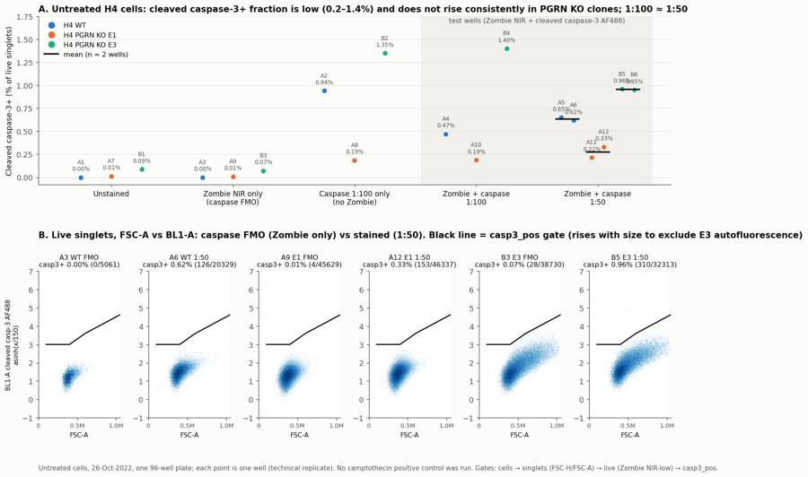
88
agent
Fixing label collisions and making single positive events visible in panel B.
89
tool call · Bash
python3 - <<'EOF'
import re
p='work/summary_fig.py'; s=open(p).read()
s=s.replace("jit = np.linspace(-0.05, 0.05, len(v)) if len(v) > 1 else [0]","jit = np.linspace(-0.07, 0.07, len(v)) if len(v) > 1 else [0]")
s=s.replace(""" for xx, vv, ww in zip(x + np.array(jit), v, ws):
ax.annotate(f'{ww}\\n{vv:.2f}%', (xx, vv), xytext=(0, 9), textcoords='offset points', ha='center', fontsize=7.5, color=TXT2)""",
""" for k, (xx, vv, ww) in enumerate(zip(x + np.array(jit), v, ws)):
if len(v) > 1:
ha, dx = (('right', -5) if k == 0 else ('left', 5))
else:
ha, dx = 'center', 0
ax.annotate(f'{ww}\\n{vv:.2f}%', (xx, vv), xytext=(dx, 9), textcoords='offset points', ha=ha, fontsize=7.5, color=TXT2)""")
s=s.replace("cmap='Blues', norm=matplotlib.colors.LogNorm()","cmap=CM, norm=matplotlib.colors.LogNorm(vmin=1)")
s=s.replace("g = fk.parse_gating_xml('/task/outputs/gates.xml')\nash","CM = matplotlib.colors.LinearSegmentedColormap.from_list('b', ['#86b6ef', '#2a78d6', '#104281', '#0b0b0b'])\ng = fk.parse_gating_xml('/task/outputs/gates.xml')\nash")
open(p,'w').write(s)
EOF
python3 work/summary_fig.py >/dev/null90
tool output
(Bash completed with no output)
91
tool call · Read
{
"file_path": "/task/outputs/figure.png"
}92
tool output
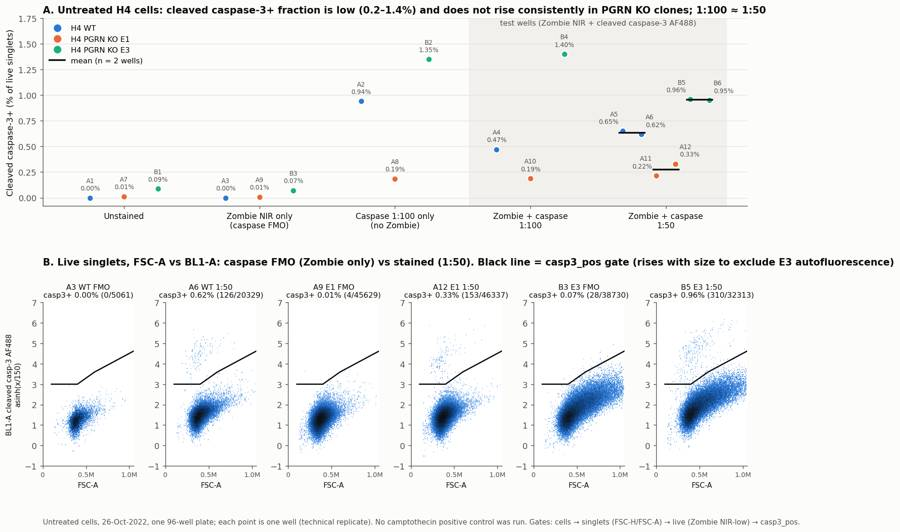
94
agent
Figure reads cleanly. Now I'm checking the upstream gates (cells, singlets, live) drawn on the data.
95
tool call · Bash
cat > work/gateqc.py <<'EOF'
import flowkit as fk, numpy as np, pandas as pd, matplotlib
matplotlib.use('Agg')
import matplotlib.pyplot as plt
lay = pd.read_csv('inputs/plate_layout.csv'); fn = dict(zip(lay.well, lay.file))
g = fk.parse_gating_xml('/task/outputs/gates.xml')
ash = lambda x: np.arcsinh(x/150)
ws = ['A1','A4','A9','A10','B1','B3','B5']
fig, axes = plt.subplots(3, len(ws), figsize=(4*len(ws), 11))
CM='jet'
for j,w in enumerate(ws):
s = fk.Sample('inputs/raw/'+fn[w]); res = g.gate_sample(s)
df = s.as_dataframe(source='raw'); df.columns = df.columns.get_level_values(0)
cells = res.get_gate_membership('cells'); sing = res.get_gate_membership('singlets')
kw = dict(bins=180, cmap=CM, norm=matplotlib.colors.LogNorm(vmin=1))
a=axes[0,j]; a.hist2d(df['FSC-A'], df['SSC-A'], range=[[0,1.05e6],[0,1.05e6]], **kw)
a.plot([130e3,1.04e6,1.04e6,130e3,130e3],[30e3,30e3,1.04e6,1.04e6,30e3],'k-'); a.set_title(f"{w} cells {cells.sum()}/{len(df)}"); a.set_xlabel('FSC-A'); a.set_ylabel('SSC-A')
a=axes[1,j]; a.hist2d(df['FSC-A'][cells], df['FSC-H'][cells], range=[[0,1.05e6],[0,6.5e5]], **kw)
xs=np.array([100e3,1.1e6]); a.plot(xs,0.36*xs,'k-'); a.plot(xs,0.75*xs,'k-'); a.set_title(f"singlets {sing.sum()}/{cells.sum()}"); a.set_xlabel('FSC-A'); a.set_ylabel('FSC-H')
a=axes[2,j]; a.hist2d(df['FSC-A'][sing], ash(df['RL3-A'][sing]), range=[[0,1.05e6],[-1,10]], **kw)
a.plot(xs, 6.2+0.8*(xs-130e3)/(910e3),'k-'); a.set_title(f"live {res.get_gate_count('live')} dead {res.get_gate_count('dead')}"); a.set_xlabel('FSC-A'); a.set_ylabel('asinh(RL3-A/150) Zombie NIR')
plt.tight_layout(); plt.savefig('/task/outputs/gating_qc.png', dpi=60)
EOF
python3 work/gateqc.py96
tool output
(Bash completed with no output)
97
tool call · Read
{
"file_path": "/task/outputs/gating_qc.png"
}98
tool output
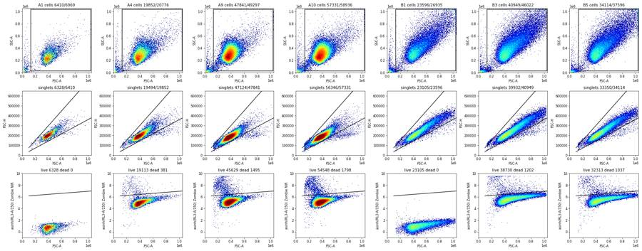
100
agent
Gates sit well on the data. The singlet line clips a few of the largest E3 singlets, which is a small and acceptable loss. Next: computing QC evidence and writing flags.csv.
101
tool call · Bash
python3 - <<'EOF'
import flowkit as fk, numpy as np, pandas as pd
from scipy.stats import chi2
lay = pd.read_csv('inputs/plate_layout.csv')
c = pd.read_csv('/task/outputs/counts.csv'); w = c.pivot(index='well', columns='population', values='count')
for _, r in lay.iterrows():
s = fk.Sample('inputs/raw/'+r.file); df = s.as_dataframe(source='raw'); df.columns = df.columns.get_level_values(0)
n = len(df); sf = (df['FSC-A']>=1048575).sum(); ss=(df['SSC-A']>=1048575).sum()
t = df['Time'].values; h,_ = np.histogram(t, np.arange(0,100,2))
k = w.loc[r.well,'casp3_pos']; L = w.loc[r.well,'live']
lo = chi2.ppf(0.025, 2*k)/2 if k>0 else 0; hi = chi2.ppf(0.975, 2*(k+1))/2
print(r.well, n, f'FSCsat {sf} ({100*sf/n:.2f}%) SSCsat {ss} ({100*ss/n:.2f}%)', f'rate {n/97.5:.0f}/s min2s {h[1:-2].min()} max2s {h.max()}', f'casp {k}/{L} = {100*k/L:.3f}% CI {100*lo/L:.2f}-{100*hi/L:.2f}', f"dead {100*w.loc[r.well,'dead']/w.loc[r.well,'singlets']:.2f}%")
# pooled
for name, ws in [('WT50',['A5','A6']),('E150',['A11','A12']),('E350',['B5','B6']),('WTall',['A4','A5','A6']),('E1all',['A10','A11','A12']),('E3all',['B4','B5','B6'])]:
k = w.loc[ws,'casp3_pos'].sum(); L = w.loc[ws,'live'].sum()
v = 100*w.loc[ws,'casp3_pos']/w.loc[ws,'live']
print(name, k, L, f'{100*k/L:.3f}', f'mean {v.mean():.3f} sd {v.std():.3f}')
EOF102
tool output
A1 6969 FSCsat 9 (0.13%) SSCsat 12 (0.17%) rate 71/s min2s 74 max2s 219 casp 0/6328 = 0.000% CI 0.00-0.06 dead 0.00% A2 3149 FSCsat 3 (0.10%) SSCsat 12 (0.38%) rate 32/s min2s 38 max2s 97 casp 24/2550 = 0.941% CI 0.60-1.40 dead 0.00% A3 5742 FSCsat 9 (0.16%) SSCsat 14 (0.24%) rate 59/s min2s 61 max2s 181 casp 0/5061 = 0.000% CI 0.00-0.07 dead 1.75% A4 20776 FSCsat 67 (0.32%) SSCsat 46 (0.22%) rate 213/s min2s 267 max2s 659 casp 90/19113 = 0.471% CI 0.38-0.58 dead 1.95% A5 13119 FSCsat 18 (0.14%) SSCsat 18 (0.14%) rate 135/s min2s 172 max2s 439 casp 80/12295 = 0.651% CI 0.52-0.81 dead 1.30% A6 21946 FSCsat 38 (0.17%) SSCsat 28 (0.13%) rate 225/s min2s 217 max2s 638 casp 126/20329 = 0.620% CI 0.52-0.74 dead 2.47% A7 33911 FSCsat 17 (0.05%) SSCsat 33 (0.10%) rate 348/s min2s 297 max2s 1005 casp 4/32368 = 0.012% CI 0.00-0.03 dead 0.00% A8 52749 FSCsat 35 (0.07%) SSCsat 52 (0.10%) rate 541/s min2s 713 max2s 1566 casp 94/50520 = 0.186% CI 0.15-0.23 dead 0.00% A9 49297 FSCsat 36 (0.07%) SSCsat 43 (0.09%) rate 506/s min2s 502 max2s 1429 casp 4/45629 = 0.009% CI 0.00-0.02 dead 3.17% A10 58936 FSCsat 59 (0.10%) SSCsat 56 (0.10%) rate 604/s min2s 800 max2s 1699 casp 103/54548 = 0.189% CI 0.15-0.23 dead 3.19% A11 51193 FSCsat 38 (0.07%) SSCsat 50 (0.10%) rate 525/s min2s 621 max2s 1470 casp 102/47216 = 0.216% CI 0.18-0.26 dead 3.02% A12 51047 FSCsat 30 (0.06%) SSCsat 47 (0.09%) rate 524/s min2s 600 max2s 1396 casp 153/46337 = 0.330% CI 0.28-0.39 dead 3.93% B1 26935 FSCsat 786 (2.92%) SSCsat 973 (3.61%) rate 276/s min2s 293 max2s 890 casp 20/23105 = 0.087% CI 0.05-0.13 dead 0.00% B2 36048 FSCsat 1054 (2.92%) SSCsat 1198 (3.32%) rate 370/s min2s 442 max2s 1061 casp 422/31290 = 1.349% CI 1.22-1.48 dead 0.00% B3 46022 FSCsat 1692 (3.68%) SSCsat 1830 (3.98%) rate 472/s min2s 540 max2s 1464 casp 28/38730 = 0.072% CI 0.05-0.10 dead 3.01% B4 27503 FSCsat 940 (3.42%) SSCsat 1004 (3.65%) rate 282/s min2s 324 max2s 911 casp 320/22855 = 1.400% CI 1.25-1.56 dead 4.20% B5 37596 FSCsat 1355 (3.60%) SSCsat 1450 (3.86%) rate 386/s min2s 506 max2s 1175 casp 310/32313 = 0.959% CI 0.86-1.07 dead 3.11% B6 24797 FSCsat 676 (2.73%) SSCsat 818 (3.30%) rate 254/s min2s 272 max2s 800 casp 200/21028 = 0.951% CI 0.82-1.09 dead 4.08% WT50 206 32624 0.631 mean 0.635 sd 0.022 E150 255 93553 0.273 mean 0.273 sd 0.081 E350 510 53341 0.956 mean 0.955 sd 0.006 WTall 296 51737 0.572 mean 0.580 sd 0.096 E1all 358 148101 0.242 mean 0.245 sd 0.075 E3all 830 76196 1.089 mean 1.104 sd 0.257
104
tool call · Bash
python3 - <<'EOF'
import pandas as pd
lay = pd.read_csv('inputs/plate_layout.csv')
sat = {'B1':(786,26935,2.92,973,3.61),'B2':(1054,36048,2.92,1198,3.32),'B3':(1692,46022,3.68,1830,3.98),
'B4':(940,27503,3.42,1004,3.65),'B5':(1355,37596,3.60,1450,3.86),'B6':(676,24797,2.73,818,3.30)}
F = {}
for wl,(n,tot,p,ns,ps) in sat.items():
ev = (f"{n}/{tot} events ({p:.2f}%) at the FSC-A ceiling (1,048,575) and {ns} ({ps:.2f}%) at the SSC-A ceiling vs <=0.32% in every WT/E1 well; "
"E3 cells are larger than WT/E1 at FSC voltage 20. Ceiling events fall outside the 'cells' gate (FSC-A < 1.04e6), so the largest ~3% of E3 events are not analysed; "
"casp3+ cells are small (median FSC-A ~0.45e6) so the casp3+ % is little affected.")
F[wl] = ('saturation', ev, 'keep_with_note')
F['B4'] = ('saturation', F['B4'][1] + " Note: plate-map label 'E3-1 @ 1:100' omits 'caspase', but the data show caspase staining (320/22855 = 1.40% casp3+ of live) and Zombie NIR staining (live median RL3-A 25,135), consistent with caspase 1:100 + Zombie like A4/A10.", 'keep_with_note')
F['B5'] = ('saturation', F['B5'][1] + " Also only 5 events in the first 2 s of acquisition (then ~390/s); no effect on the data.", 'keep_with_note')
F['A2'] = ('too_few_events', "Only 3149 total events (32 events/s vs 135-604/s in stained test wells) -> 2550 live singlets and 24 casp3+ events; casp3+ = 0.94% (Poisson 95% CI 0.60-1.40%), too imprecise to compare with A4 (0.47%). Single-stain (caspase-only, no Zombie) control only, not used for the main comparison; retained for reference.", 'keep_with_note')
rows=[]
for _, r in lay.iterrows():
it, ev, dec = F.get(r.well, ('none','','keep'))
rows.append(dict(file=r.file, well=r.well, issue_type=it, evidence=ev, decision=dec))
pd.DataFrame(rows, columns=['file','well','issue_type','evidence','decision']).to_csv('/task/outputs/flags.csv', index=False)
print(pd.read_csv('/task/outputs/flags.csv')[['well','issue_type','decision']])
EOF105
tool output
well issue_type decision 0 A1 none keep 1 A2 too_few_events keep_with_note 2 A3 none keep 3 A4 none keep 4 A5 none keep 5 A6 none keep 6 A7 none keep 7 A8 none keep 8 A9 none keep 9 A10 none keep 10 A11 none keep 11 A12 none keep 12 B1 saturation keep_with_note 13 B2 saturation keep_with_note 14 B3 saturation keep_with_note 15 B4 saturation keep_with_note 16 B5 saturation keep_with_note 17 B6 saturation keep_with_note
107
agent
Writing answer.json and report.md.
108
tool call · Bash
cat > outputs/answer.json <<'EOF'
{
"question": "Does the intracellular-flow cleaved caspase-3 (Asp175) Alexa Fluor 488 assay (CST #9669, with Zombie NIR viability dye) detect caspase-3-active cells in untreated H4 WT and PGRN KO (E1, E3) cells, does 1:50 antibody perform better than 1:100, and is caspase-3 activation higher in PGRN KO than WT?",
"comparisons": [
{"comparison": "PGRN KO E1 vs WT, % cleaved-caspase-3+ of live singlets, Zombie + caspase 1:50", "a": "WT_casp_1to50", "b": "E1_casp_1to50", "direction": "decrease", "magnitude": "0.64% -> 0.27% of live cells (-0.36 percentage points, 0.43x); same direction at 1:100 (A4 0.47% -> A10 0.19%) and in caspase-only wells (A2 0.94% -> A8 0.19%)", "confidence": "medium"},
{"comparison": "PGRN KO E3 vs WT, % cleaved-caspase-3+ of live singlets, Zombie + caspase 1:50", "a": "WT_casp_1to50", "b": "E3_casp_1to50", "direction": "increase", "magnitude": "0.64% -> 0.96% of live cells (+0.32 percentage points, 1.5x; +0.25 pp after subtracting the E3 Zombie-only FMO background of 0.07%); same direction at 1:100 (A4 0.47% -> B4 1.40%)", "confidence": "medium"},
{"comparison": "PGRN KO clone E3 vs clone E1 (clone-to-clone consistency), Zombie + caspase 1:50", "a": "E1_casp_1to50", "b": "E3_casp_1to50", "direction": "increase", "magnitude": "0.27% -> 0.96% (+0.68 pp, 3.5x): the two KO clones move in opposite directions relative to WT, so there is no consistent PGRN-KO effect", "confidence": "medium"},
{"comparison": "Antibody 1:50 vs 1:100 in WT", "a": "WT_casp_1to100", "b": "WT_casp_1to50", "direction": "no_clear_change", "magnitude": "0.47% (n=1) vs 0.64% (n=2); casp3+ median BL1-A 5178 vs 5940-6629 (+15-28%), stain index 26 vs 30-32; direction not consistent across lines", "confidence": "low"},
{"comparison": "Antibody 1:50 vs 1:100 in PGRN KO E1", "a": "E1_casp_1to100", "b": "E1_casp_1to50", "direction": "no_clear_change", "magnitude": "0.19% (n=1) vs 0.27% (n=2, 0.22 and 0.33%); casp3+ median BL1-A 4744 vs 4937-5021 (+4-6%), stain index 23 vs 23-24", "confidence": "low"},
{"comparison": "Antibody 1:50 vs 1:100 in PGRN KO E3", "a": "E3_casp_1to100", "b": "E3_casp_1to50", "direction": "no_clear_change", "magnitude": "1.40% (n=1) vs 0.96% (n=2), opposite direction to WT/E1; casp3+ median BL1-A 4828 vs 5922-6292 (+23-30%), stain index 19 vs 21-23", "confidence": "low"}
],
"overall_answer": "partial: the cleaved caspase-3 AF488 intracellular stain works technically in H4 cells: it resolves a discrete, bright caspase-3+ population (median 16-23x the negative cells, stain index 19-32) that is absent from unstained and Zombie-only FMO controls (<=0.09%), Zombie NIR co-staining does not interfere, and 1:100 performs as well as 1:50. But untreated cells contain very few positive cells (0.19-1.40% of live), no camptothecin positive control was run to show the assay detects induced caspase-3 activation, and PGRN KO does not consistently raise caspase-3 activation (1:50: WT 0.64%, E1 0.27%, E3 0.96%).",
"assay_verdict": "needs_optimisation",
"next_action": "repeat_with_change",
"next_change": {
"what": "Apoptosis positive control: camptothecin treatment (camptothecin is in the entry's materials list but was not used)",
"from": "No treatment: all 18 wells untreated, so only baseline caspase-3 was measured (0.19-1.40% of live cells)",
"to": "For each line, untreated, DMSO-vehicle and camptothecin-treated wells (e.g. 1 and 5 uM, about 24 h before harvest), 3 culture wells per condition, stained with Zombie NIR + cleaved caspase-3 AF488 at 1:100, with unstained and Zombie-only FMO controls kept",
"why": "The assay has not yet been shown to detect a rise in caspase-3 activation, which is the readout the PGRN rescue study needs. Baseline signal is near the floor, and the KO clones disagree. An induced positive control sets the dynamic range and confirms the gate. 1:50 gave no gain in % positive over 1:100, so 1:100 saves antibody."
},
"excluded_wells": [],
"caveats": [
"No positive control (no camptothecin or other apoptosis inducer), so specificity and dynamic range for induced caspase-3 activation are not demonstrated.",
"Replicates are technical wells from one plate on one day: n=1 per line at 1:100 and n=2 per line at 1:50. Well-to-well spread exceeds counting error (E3: B4 1.40% vs B5/B6 0.96%, with non-overlapping Poisson CIs).",
"Culture medium was aspirated before trypsinisation, so floating apoptotic and dead cells were discarded. Caspase-3+ and dead fractions are probably underestimated.",
"E3 cells are larger: 2.7-3.7% of E3 events sit at the FSC-A/SSC-A ceiling and are excluded. E3 BL1 autofluorescence rises with cell size, so a size-dependent (diagonal) caspase gate was used. The E3 FMO background is 0.07%, against <=0.01% for WT/E1.",
"WT wells yielded fewer cells (A1-A3: 3149-6969 events, against 13,119-58,936 in the other wells). A2 has only 24 casp3+ events. Cell density differed between lines, which could affect baseline apoptosis.",
"The FCS label for BL1 is stale ('AAV-GFP/GFP'). Per the plan, BL1 carries cleaved caspase-3 AF488 and RL3 carries Zombie NIR. No compensation was applied: the dyes are on different lasers, and single-stain controls show no spill.",
"Both KO clones had more Zombie-bright dead singlets than WT (E1 3.0-3.9%, E3 3.0-4.2%, WT 1.3-2.5%), but this is a secondary readout and also affected by the discarded floating cells."
]
}
EOF
python3 -c "import json; d=json.load(open('/task/outputs/answer.json')); print('ok', len(d['comparisons']))"109
tool output
ok 6
111
tool call · Bash
cat > outputs/report.md <<'EOF' # EXP22004082: H4 cleaved caspase-3 intracellular flow (Attune NxT, 26-Oct-2022) ## Question The objective in the notebook is to "measure caspase 3 activity using flow cytometry in H4 cells to practice using this assay". The assay will later be used in iPSC neurons for the PGRN RNAswap programme. For this plate that becomes three questions: 1. Does the intracellular cleaved caspase-3 (Asp175) Alexa Fluor 488 stain (CST #9669), used with Zombie NIR viability dye after fix/perm, resolve caspase-3-active cells in H4 cells? 2. Does 1:50 antibody perform better than 1:100? 3. Is caspase-3 activation higher in untreated PGRN KO clones (E1, E3) than in WT, as the background predicts? ## Methods - **Data.** There are 18 FCS 3.1 files from one 96-well plate: per line, unstained, caspase-only 1:100 (no Zombie), Zombie-only, Zombie + caspase 1:100 (n=1) and Zombie + caspase 1:50 (n=2). No cells were treated; camptothecin is in the materials list but was not used in this run. Acquisition was about 98 s per well (162–164 µL at 100 µL/min), with an FSC threshold of 25,000. - **Channel assignment.** The FCS labels are stale: BL1 is called "AAV-GFP / GFP". From the plan's reagents and voltages (BL1 caspase 250, RL3 Zombie NIR 350): - **BL1-A** (488 nm laser, 530/30) = cleaved caspase-3 AF488. - **RL3-A** (640 nm laser, 780/60) = Zombie NIR. - **Compensation.** None (`uncompensated`). The spillover matrix in the files is identity, and the two dyes are on different lasers. Single-stain controls confirm this: - Zombie-only negatives have BL1-A medians of 223 (WT) and 246 (E1), against 231 and 250 for the unstained wells. - Caspase-only wells have RL3-A medians of 117–176, against 115–181 for the unstained wells. - **Gating.** All gating was done in FlowKit 1.2.3 with one strategy for every well (`gates.xml`). Fluorescence axes use the GatingML asinh transform with T = 1,048,576, M = 4.1457 and A = 0, which equals asinh(x/150)/9.546. Gate coordinates below are given in asinh(x/150) units. 1. `cells`: FSC-A 130k–1.04M and SSC-A 30k–1.04M. This removes debris and events at the 1,048,575 detector ceiling. 2. `singlets`: polygon on FSC-A × FSC-H keeping FSC-H/FSC-A between 0.36 and 0.75, which removes the low-ratio doublet branch. 3. `live` and `dead`: Zombie NIR boundary on FSC-A × RL3-A, running from asinh 6.2 at FSC-A 130k to 7.0 at 1.04M. Because the dye was applied before fixation, live cells stain dimly (RL3 ≈ 11–25k) and dead cells brightly (≥ 70k). The boundary rises with size because the live-cell signal scales with cell size. `dead` is the complement of `live` within singlets. In wells without Zombie, all singlets fall in `live`, as expected. 4. `casp3_pos` (marker_positive): within `live`, BL1-A above a size-dependent line on FSC-A × BL1-A. The line is flat at asinh 3.0 (BL1 ≈ 1500) up to FSC-A 400k, then rises through 3.6 at 600k to 4.6 at 1.04M. The diagonal follows the size-dependent BL1 autofluorescence of large E3 cells. The gate was set on the Zombie-only (caspase FMO) and unstained wells, where it leaves 0.00% (WT), 0.01% (E1) and 0.07–0.09% (E3). - **Metric.** % `casp3_pos` / `live`, per well. The condition mean and SD are taken across wells, and no normalisation is applied. The FMO background is reported alongside rather than subtracted. Staining quality is measured by: - the casp3+ median BL1-A divided by the median of live casp3− cells with FSC-A 200–450k; - the stain index, (MFI+ − MFI−)/(2 × robust SD−). - **QC.** I checked event rate and FSC/BL1 medians over time in 2-s bins: there were no clogs, no dry runs and no mid-run drift. I also checked scatter saturation, event yield, and whether each well's stain pattern matches its label. ## Results **QC.** All 18 wells are usable and none is excluded. - Every well's staining pattern matches its label: - Zombie-bright only where Zombie was added; - a caspase-bright population only where antibody was added. - B4's label omits "caspase", but its data match caspase 1:100 + Zombie. - In all E3 wells, 2.7–3.7% of events sit at the FSC-A/SSC-A ceiling (≤ 0.32% for WT/E1). E3 cells are larger, so these events fall outside `cells` (keep_with_note). - A2 (WT caspase-only) has only 3149 events, 2550 live cells and 24 positives, giving 0.94% with a 95% CI of 0.60–1.40% (keep_with_note). - The WT control wells A1–A3 also have low yields (5742–6969 events), but they are adequate to place gates. **The stain resolves a discrete caspase-3+ population.** - In every antibody-stained well there is a separate cluster of BL1-bright cells: - median BL1-A 4,361–6,629, against 260–327 for the negatives; - 16–23× brighter, with a stain index of 19–32. - The positive cells are Zombie-dim and slightly smaller than the negatives, consistent with early apoptosis. - The cluster is absent from unstained and Zombie-only wells (0–28 events, ≤ 0.09%). - Caspase-only and Zombie + caspase wells at 1:100 give the same frequency in E1 (0.186% vs 0.189%) and E3 (1.35% vs 1.40%). Zombie co-staining therefore does not interfere. - Dead (Zombie-bright) cells are almost all caspase-3 negative (5/515 in A6, 25/1037 in B5). | Condition | Wells | % casp3+ of live (mean ± SD) | Events casp3+/live | |---|---|---|---| | WT Zombie-only FMO | A3 | 0.00 | 0/5061 | | WT casp 1:100 | A4 | 0.47 | 90/19113 | | WT casp 1:50 | A5;A6 | 0.64 ± 0.02 | 206/32624 | | E1 Zombie-only FMO | A9 | 0.01 | 4/45629 | | E1 casp 1:100 | A10 | 0.19 | 103/54548 | | E1 casp 1:50 | A11;A12 | 0.27 ± 0.08 | 255/93553 | | E3 Zombie-only FMO | B3 | 0.07 | 28/38730 | | E3 casp 1:100 | B4 | 1.40 | 320/22855 | | E3 casp 1:50 | B5;B6 | 0.96 ± 0.01 | 510/53341 | `condition_summary.csv` also lists the unstained and caspase-only conditions: - unstained: 0.00 / 0.01 / 0.09% (WT / E1 / E3); - caspase-only: 0.94 / 0.19 / 1.35%. **Antibody dilution.** 1:50 does not consistently raise the % positive: | Line | 1:100 | 1:50 | Change at 1:50 | |---|---|---|---| | WT | … [3,776 more characters not shown]
112
tool output
done
114
agent
Checking a couple of numbers quoted in the report against the final gates.
115
tool call · Bash
python3 - <<'EOF'
import flowkit as fk, numpy as np, pandas as pd
lay = pd.read_csv('inputs/plate_layout.csv'); fn = dict(zip(lay.well, lay.file))
g = fk.parse_gating_xml('/task/outputs/gates.xml')
print('boundary raw', 150*np.sinh(6.2), 150*np.sinh(7.0), 'bl thr', 150*np.sinh(3.0))
for w in ['A4','A6','A10','A12','B4','B5']:
s = fk.Sample('inputs/raw/'+fn[w]); res = g.gate_sample(s)
df = s.as_dataframe(source='raw'); df.columns = df.columns.get_level_values(0)
dead = res.get_gate_membership('dead')
fa = df['FSC-A'].values; bl = np.arcsinh(df['BL1-A'].values/150)
thr = np.interp(fa, [100e3,400e3,600e3,1.04e6],[3,3,3.6,4.6])
print(w, 'dead casp+', int((dead & (bl>thr)).sum()), '/', int(dead.sum()), 'dead RL3 median', np.median(df['RL3-A'].values[dead]))
EOF116
tool output
boundary raw 36956.025874696505 82247.41849098698 bl thr 1502.6812391114854 A4 dead casp+ 1 / 381 dead RL3 median 129906.0 A6 dead casp+ 5 / 515 dead RL3 median 145773.0 A10 dead casp+ 6 / 1798 dead RL3 median 155148.0 A12 dead casp+ 4 / 1896 dead RL3 median 191759.5 B4 dead casp+ 36 / 1002 dead RL3 median 91293.5 B5 dead casp+ 21 / 1037 dead RL3 median 125321.0
117
tool call · Bash
python3 - <<'EOF'
p='outputs/report.md'; s=open(p).read()
s=s.replace("live cells stain dimly (RL3 ≈ 11–25k) and dead cells brightly (≥ 70k).","live cells stain dimly (median RL3-A ≈ 11–25k) and dead cells brightly (median 91–192k). The boundary is about 37k at small FSC and 82k at large FSC.")
s=s.replace("The positive cells are Zombie-dim and slightly smaller than the negatives, consistent with early apoptosis.","The positive cells are Zombie-dim and similar in size to, or slightly smaller than, the negatives, consistent with early apoptosis.")
s=s.replace("Dead (Zombie-bright) cells are almost all caspase-3 negative (5/515 in A6, 25/1037 in B5).","Dead (Zombie-bright) cells are almost all caspase-3 negative (5/515 in A6, 4/1896 in A12, 21/1037 in B5).")
open(p,'w').write(s)
EOF
grep -n "median 91\|similar in size\|4/1896" outputs/report.md | head118
tool output
21: 3. `live` and `dead`: Zombie NIR boundary on FSC-A × RL3-A, running from asinh 6.2 at FSC-A 130k to 7.0 at 1.04M. Because the dye was applied before fixation, live cells stain dimly (median RL3-A ≈ 11–25k) and dead cells brightly (median 91–192k). The boundary is about 37k at small FSC and 82k at large FSC. The boundary rises with size because the live-cell signal scales with cell size. `dead` is the complement of `live` within singlets. In wells without Zombie, all singlets fall in `live`, as expected. 42:- The positive cells are Zombie-dim and similar in size to, or slightly smaller than, the negatives, consistent with early apoptosis. 45:- Dead (Zombie-bright) cells are almost all caspase-3 negative (5/515 in A6, 4/1896 in A12, 21/1037 in B5).
120
agent
Running a final consistency check of every deliverable against the spec.
121
tool call · Bash
python3 - <<'EOF'
import flowkit as fk, pandas as pd, json, numpy as np
g = fk.parse_gating_xml('/task/outputs/gates.xml')
gate_names = {n for n,_ in g.get_gate_ids()}
c = pd.read_csv('/task/outputs/counts.csv', keep_default_na=False)
assert list(c.columns)==['file','well','population','role','parent','count','pct_of_parent']
lay = pd.read_csv('inputs/plate_layout.csv')
assert set(c.file)==set(lay.file) and len(c)==18*6
assert set(c.population)-{'all_events'} == gate_names, (set(c.population), gate_names)
print(c.groupby(['population','role','parent']).size())
assert (c[c.population=='all_events'].pct_of_parent=='').all()
# reproduce counts from xml
for _, r in lay.iterrows():
res = g.gate_sample(fk.Sample('inputs/raw/'+r.file))
sub = c[c.file==r.file].set_index('population')
for p in gate_names:
assert int(sub.loc[p,'count'])==int(res.get_gate_count(p))
assert int(sub.loc['all_events','count'])==fk.Sample('inputs/raw/'+r.file).event_count
print('counts reproduce')
f = pd.read_csv('/task/outputs/flags.csv', keep_default_na=False)
assert list(f.columns)==['file','well','issue_type','evidence','decision'] and len(f)==18
assert ((f.issue_type!='none')|(f.decision=='keep')).all() and (f[f.issue_type!='none'].evidence!='').all()
cs = pd.read_csv('/task/outputs/condition_summary.csv', keep_default_na=False)
assert list(cs.columns)==['condition','wells','n_wells_used','mean','sd','metric_definition','normalisation_applied']
w = c.pivot(index='well', columns='population', values='count').astype(float)
for _, r in cs.iterrows():
ws = r.wells.split(';'); assert len(ws)==r.n_wells_used and set(ws)<=set(lay.well)
v = 100*w.loc[ws,'casp3_pos']/w.loc[ws,'live']
assert abs(v.mean()-float(r['mean']))<1e-3
assert (r.sd=='') == (len(ws)==1)
a = json.load(open('/task/outputs/answer.json'))
conds = set(cs.condition)
for cmp in a['comparisons']: assert cmp['a'] in conds and cmp['b'] in conds
assert sorted(a['excluded_wells'])==sorted(f[f.decision=='exclude'].well)
assert a['overall_answer'].split(':')[0] in ('yes','partial','no')
rep = open('/task/outputs/report.md').read()
hs = [l for l in rep.splitlines() if l.startswith('## ')]
print(hs)
print('ALL OK')
EOF
ls -la /task/outputs122
tool output
population role parent all_events other none 18 casp3_pos marker_positive live 18 cells cells all_events 18 dead other singlets 18 live live singlets 18 singlets singlets cells 18 dtype: int64 counts reproduce ['## Question', '## Methods', '## Results', '## Conclusion', '## Caveats', '## Recommendation'] ALL OK total 588 drwxr-xr-x 2 root root 4096 Nov 10 17:17 . drwxr-xr-x 5 root root 4096 Nov 10 17:08 .. -rw-r--r-- 1 root root 5449 Nov 10 17:17 answer.json -rw-r--r-- 1 root root 2486 Nov 10 17:15 condition_summary.csv -rw-r--r-- 1 root root 9577 Nov 10 17:13 counts.csv -rw-r--r-- 1 root root 260829 Nov 10 17:15 figure.png -rw-r--r-- 1 root root 4200 Nov 10 17:16 flags.csv -rw-r--r-- 1 root root 6047 Nov 10 17:13 gates.xml -rw-r--r-- 1 root root 278227 Nov 10 17:15 gating_qc.png -rw-r--r-- 1 root root 9945 Nov 10 17:18 report.md
124
agent
I've finished the analysis. The stain itself works in H4 cells, but untreated cells contain very few caspase-3+ cells, and this run cannot show that the assay detects a rise. My recommendation is to **repeat with a camptothecin positive control**. All deliverables are in `/task/outputs/`, and a final check confirmed that the saved gates reproduce every count in `counts.csv` on all 18 files.
**Channels.** The FCS files label BL1 "AAV-GFP"; that label is out of date. From the plan, BL1-A carries the cleaved caspase-3 AF488 antibody and RL3-A carries Zombie NIR. I applied no compensation: the two dyes are on different lasers, and the single-stain wells show no spill between them.
**Gating** (one strategy for all wells): cells → singlets → live (or dead) → `casp3_pos`, with `dead` reported as an extra population. The caspase gate rises with cell size. Without that, the large, naturally brighter E3 cells would leak about 12% false positives; with it, the no-antibody controls show 0.00% (WT), 0.01% (E1) and 0.07% (E3).
**Answer: partial.**
- **The stain works.** Every antibody-stained well has a separate bright population, 16–23× brighter than negative cells. It is absent from the unstained and Zombie-only controls, and adding Zombie NIR doesn't change the caspase result.
- **1:100 is enough.** 1:50 makes the positive cells only 4–30% brighter, and the % positive doesn't move consistently between dilutions (it goes up in WT and E1 but down in E3).
- **There is no consistent knockout effect.** Caspase-3+ cells are rare in untreated cells (0.2–1.4% of live cells). At 1:50:
| Line | Wells | Caspase-3+ (% of live cells) |
|---|---|---|
| WT | A5, A6 | 0.64% |
| PGRN KO E1 | A11, A12 | 0.27% |
| PGRN KO E3 | B5, B6 | 0.96% |
The two knockout clones move in opposite directions from WT. Both knockouts do have more dead cells than WT (3–4% vs 1.3–2.5%).
- **Assay verdict: needs optimisation.** No camptothecin positive control was run, although camptothecin is in the materials list. So the assay's ability to detect an increase in caspase-3 activation, which is what the PGRN rescue study needs, is untested.
**QC.** No wells are excluded. Two kinds of well are kept with a note:
- **All six E3 wells:** 2.7–3.7% of events are off-scale on the size and granularity detectors, because E3 cells are larger. These events fall outside the cells gate.
- **A2** (WT caspase-only): only 3,149 events and 24 positive cells, so its 0.94% is imprecise.
I found no clogs, dry runs or mislabels. B4's plate label omits "caspase", but its data match a caspase 1:100 + Zombie well.
**Next step: repeat with one change.**
- For each line, run untreated, DMSO-vehicle and camptothecin-treated wells (for example 1 and 5 µM for about 24 h; confirm the dose for H4), with 3 culture wells each.
- Stain at 1:100 and keep the unstained and Zombie-only controls.
Also:
- Collect the floating cells with the medium: this run aspirated the medium first, which discards apoptotic cells and probably underestimates both caspase-3+ and dead fractions.
- Lower the size-detector voltage slightly so E3 cells stay on scale.
- Aim for more events in the WT wells.
The replicates here are wells from a single plate on one day: one well per line at 1:100 and two at 1:50. Treat the knockout-vs-WT comparison as unresolved until it is repeated on separate platings.
Files are in `/task/outputs/`:
- `gates.xml`
- `counts.csv`
- `flags.csv`
- `condition_summary.csv`
- `figure.png`
- `report.md`
- `answer.json`
- `gating_qc.png` (an extra plot of the upstream gates)
final result
I've finished the analysis. The stain itself works in H4 cells, but untreated cells contain very few caspase-3+ cells, and this run cannot show that the assay detects a rise. My recommendation is to **repeat with a camptothecin positive control**. All deliverables are in `/task/outputs/`, and a final check confirmed that the saved gates reproduce every count in `counts.csv` on all 18 files. **Channels.** The FCS files label BL1 "AAV-GFP"; that label is out of date. From the plan, BL1-A carries the cleaved caspase-3 AF488 antibody and RL3-A carries Zombie NIR. I applied no compensation: the two dyes are on different lasers, and the single-stain wells show no spill between them. **Gating** (one strategy for all wells): cells → singlets → live (or dead) → `casp3_pos`, with `dead` reported as an extra population. The caspase gate rises with cell size. Without that, the large, naturally brighter E3 cells would leak about 12% false positives; with it, the no-antibody controls show 0.00% (WT), 0.01% (E1) and 0.07% (E3). **Answer: partial.** - **The stain works.** Every antibody-stained well has a separate bright population, 16–23× brighter than negative cells. It is absent from the unstained and Zombie-only controls, and adding Zombie NIR doesn't change the caspase result. - **1:100 is enough.** 1:50 makes the positive cells only 4–30% brighter, and the % positive doesn't move consistently between dilutions (it goes up in WT and E1 but down in E3). - **There is no consistent knockout effect.** Caspase-3+ cells are rare in untreated cells (0.2–1.4% of live cells). At 1:50: | Line | Wells | Caspase-3+ (% of live cells) | |---|---|---| | WT | A5, A6 | 0.64% | | PGRN KO E1 | A11, A12 | 0.27% | | PGRN KO E3 | B5, B6 | 0.96% | The two knockout clones move in opposite directions from WT. Both knockouts do have more dead cells than WT (3–4% vs 1.3–2.5%). - **Assay verdict: needs optimisation.** No camptothecin positive control was run, although camptothecin is in the materials list. So the assay's ability to detect an increase in caspase-3 activation, which is what the PGRN rescue study needs, is untested. **QC.** No wells are excluded. Two kinds of well are kept with a note: - **All six E3 wells:** 2.7–3.7% of events are off-scale on the size and granularity detectors, because E3 cells are larger. These events fall outside the cells gate. - **A2** (WT caspase-only): only 3,149 events and 24 positive cells, so its 0.94% is imprecise. I found no clogs, dry runs or mislabels. B4's plate label omits "caspase", but its data match a caspase 1:100 + Zombie well. **Next step: repeat with one change.** - For each line, run untreated, DMSO-vehicle and camptothecin-treated wells (for example 1 and 5 µM for about 24 h; confirm the dose for H4), with 3 culture wells each. - Stain at 1:100 and keep the unstained and Zombie-only controls. Also: - Collect the floating cells with the medium: this run aspirated the medium first, which discards apoptotic cells and probably underestimates both caspase-3+ and dead fractions. - Lower the size-detector voltage slightly so E3 cells stay on scale. - Aim for more events in the WT wells. The replicates here are wells from a single plate on one day: one well per line at 1:100 and two at 1:50. Treat the knockout-vs-WT comparison as unresolved until it is repeated on separate platings. Files are in `/task/outputs/`: - `gates.xml` - `counts.csv` - `flags.csv` - `condition_summary.csv` - `figure.png` - `report.md` - `answer.json` - `gating_qc.png` (an extra plot of the upstream gates)